![Slide How Deep Neural Network Works: model representation diagram plus the layer-1 computation z1[1]=theta10[1]+theta11[1]x1+theta12[1]x2 and a1[1]=g(z1[1]), the layer-L computation z1[L]=theta10[L]+theta11[L]a1[L-1]+theta12[L]a2[L-1] and h(x)=a1[L]=g(z1[L]), and the two cost functions for regression and binary classification](../assets/slides/dl4-p03-deep-nn-forward-general.png)
Lecture4 (deep_learning_part2_1.pdf, 35 หน้า) · 2603520 Deep Learning
บทนี้ทำ 2 อย่าง: (1) ยืนยันว่าสูตร forward/backprop จาก Lesson 2–3 ใช้ได้กับเครือข่ายกี่ layer ก็ได้ แค่โซ่ chain rule ยาวขึ้น (2) พาไปทีละหน้าสไลด์ตั้งแต่ "ทำไม deep network ถึงเทรนยาก" → Batch/SGD/Mini-batch → Momentum → RMSProp/Adam/AdamW → วิธีกัน overfitting (regularization, dropout, early stopping, data augmentation). ทุกสูตรมีตัวอย่างตัวเลขทีละขั้นที่คุณคำนวณตามมือได้ และทุกโค้ดบนสไลด์มีคำอธิบายบรรทัดต่อบรรทัด.
อาจารย์เล่าเป็นลำดับตรรกะแบบนี้ ให้จับเรื่องเล่านี้ให้ได้ก่อน แล้วสูตรจะตามมาเอง:
ปัญหาที่คุณกำลังจะเจอ: Lesson 2–3 เราทำงานกับเครือข่ายที่มี hidden layer เดียว เขียนสูตรได้เพราะมี layer ให้ไล่แค่ 2–3 ชั้น. พอมี 20 ชั้น คุณจะเขียนสูตรยังไง? คำตอบของอาจารย์คือ "ไม่ต้องเขียนใหม่" — เปลี่ยนเลขชั้นตายตัว (1, 2) เป็นตัวแปร \(l\) แล้วสูตรเดิมใช้ได้หมด. สามหน้าแรกของบทนี้คือการยืนยันข้อนั้น.
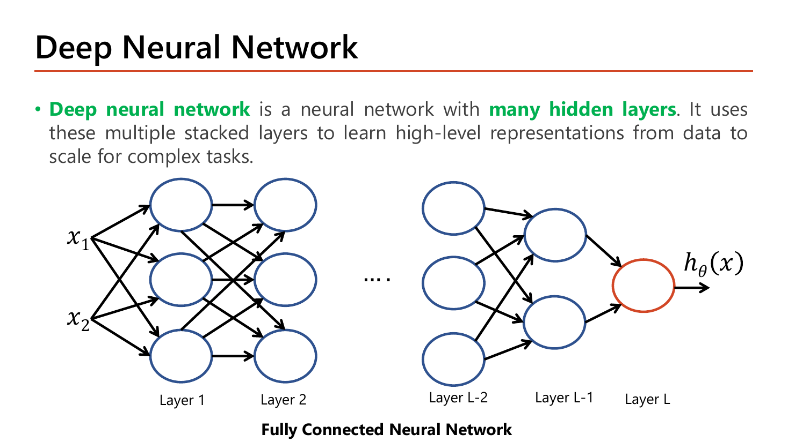
อาจารย์นิยามสั้นมากและทำสีไว้ทั้งสองคำ: Deep neural network คือ neural network ที่มี many hidden layers — จบแค่นั้น ไม่มีเงื่อนไขอื่น. ไม่มีเกณฑ์ว่า "ต้องกี่ชั้นถึงเรียกว่า deep" ในสไลด์ สิ่งที่อาจารย์เน้นคือเหตุผลที่ซ้อนหลายชั้น: ชั้นที่ซ้อนกันทำให้โมเดลเรียน "high-level representations" จากข้อมูล เพื่อรับมืองานที่ซับซ้อน. แปลเป็นภาษาคน: layer แรก ๆ เรียนของง่าย ๆ (เส้น ขอบ) layer ถัดไปเอาของง่ายมาประกอบเป็นของยาก (รูปทรง หน้าคน) — แต่ละชั้นใช้ผลของชั้นก่อนเป็นวัตถุดิบ. โครงข่ายในภาพยังเป็น Fully Connected Neural Network เหมือนเดิม คือทุก node ในชั้นหนึ่งต่อกับทุก node ในชั้นถัดไป และมี input \(x_1, x_2\) กับ output \(h_\theta(x)\) ตัวเดียวเท่านั้น — ความ "ลึก" อยู่ตรงกลาง ไม่ได้เปลี่ยนหน้าตาของ input/output.
หน้านี้อาจารย์วาง 3 ก้อนไว้ให้เทียบกัน: Model Representation, Computation on layer 1 กับ Computation on layer L, และ Cost Function. สองสมการกลางคือหัวใจ เพราะมันหน้าตาเหมือนกันเป๊ะ ต่างแค่ว่าอะไรเป็น "ขาเข้า":
$$z_1^{[1]} = \theta_{10}^{[1]} + \theta_{11}^{[1]}x_1 + \theta_{12}^{[1]}x_2,\qquad a_1^{[1]} = g\!\left(z_1^{[1]}\right)$$ $$z_1^{[L]} = \theta_{10}^{[L]} + \theta_{11}^{[L]}a_1^{[L-1]} + \theta_{12}^{[L]}a_2^{[L-1]},\qquad h_\theta(x) = a_1^{[L]} = g\!\left(z_1^{[L]}\right)$$layer 1 เอา \(x_1,x_2\) มาคูณ weight แล้วบวก bias; layer L เอา \(a_1^{[L-1]},a_2^{[L-1]}\) (ผลจากชั้นก่อนหน้า) มาคูณ weight แล้วบวก bias — โครงเดียวกัน เปลี่ยนแค่ชื่อขาเข้า
นิยามสัญลักษณ์ให้ครบ (ครั้งแรกที่ใช้ในบทนี้): \(\theta_{ji}^{[l]}\) = weight ของเส้นที่วิ่งจาก node \(i\) ของชั้น \(l-1\) เข้าสู่ node \(j\) ของชั้น \(l\); \(\theta_{j0}^{[l]}\) = bias ของ node \(j\) ชั้น \(l\); \(z\) = ผลรวมเชิงเส้นก่อนผ่าน activation; \(a = g(z)\) = ค่าที่ออกจาก node หลังผ่าน activation; \(g\) = activation function (sigmoid/ReLU ฯลฯ); \(L\) = หมายเลขชั้นสุดท้าย. ถ้าเรานิยามเพิ่มว่า \(a^{[0]} := x\) (มองว่า input คือ "ผลลัพธ์ของชั้นที่ 0") สองสมการข้างบนก็ยุบเหลือสมการเดียวที่ใช้ได้กับทุกชั้น:
$$z_j^{[l]} = \theta_{j0}^{[l]} + \sum_{i}\theta_{ji}^{[l]}\,a_i^{[l-1]},\qquad a_j^{[l]} = g\!\left(z_j^{[l]}\right)$$ส่วน Cost Function อาจารย์เขียนไว้สองแบบตามชนิดปัญหา และเป็นสูตรเดิมจาก Lesson 3 ไม่เปลี่ยนเลยแม้เครือข่ายจะลึกขึ้น — ปัญหา regression ใช้ squared error, ปัญหา classification (binary) ใช้ cross-entropy รวมทุก output \(k=1..K\):
$$J(\theta) = \frac{1}{m}\sum_{i=1}^{m}\left(h_\theta(x^{(i)}) - y^{(i)}\right)^2$$ $$\begin{aligned} J(\theta) = -\frac{1}{m}\sum_{i=1}^{m}\sum_{k=1}^{K}\Big[&y_k^{(i)}\log\big(h_\theta(x^{(i)})_k\big)\\ +\ &\big(1-y_k^{(i)}\big)\log\big(1-h_\theta(x^{(i)})_k\big)\Big] \end{aligned}$$ข้อสังเกตที่ต้องพูดได้: สูตร cost ไม่มี \(L\) โผล่มาเลยสักตัว — cost สนใจแค่ "ทำนายออกมาเท่าไร (\(h_\theta(x)\))" กับ "คำตอบจริงเท่าไร (\(y\))" ไม่สนใจว่าข้างในมีกี่ชั้น. ความลึกมีผลต่อวิธีคำนวณ \(h_\theta(x)\) และวิธีหา gradient เท่านั้น. (สไลด์เขียน \(\frac{1}{m}\) หน้า squared error ขณะที่ Lesson 1 ใช้ \(\frac{1}{2m}\) — ตัวประกอบ \(\tfrac12\) เป็นแค่ความสะดวกตอนหาอนุพันธ์ ไม่เปลี่ยนตำแหน่งจุดต่ำสุด. ในข้อสอบให้ยึดตามที่โจทย์เขียนมา.)
ทำไมต้อง \(+1\): แต่ละ node มี bias ของตัวเอง 1 ตัวเสมอ ไม่ว่าจะมีขาเข้ากี่เส้น
261 พารามิเตอร์. สังเกตว่า layer กลาง ๆ ที่เชื่อม \(10\times10\) กินพารามิเตอร์ไป 110+110 = 220 ตัว หรือ 84% ของทั้งหมด — จำนวนพารามิเตอร์โตตามผลคูณของความกว้างสองชั้นที่ติดกัน ไม่ใช่ตามจำนวน node เฉย ๆ.
![Slide How Deep Neural Network Works (2): Parameter Learning by backpropagation, with Forward Computation and Backward Computation arrows, the chain-rule derivation of dJ/dtheta_1,1^(L) = delta^(L) a_1^(L-1) and dJ/dtheta_1,1^(L-1) = delta^(L) theta_1,1^(L) g'(z1[L-1]) a1^(L-2), delta^(L) = h(x) - y, plus the update rule box and an Interpretation note](../assets/slides/dl4-p04-deep-nn-backward-interpretation.png)
อาจารย์วางลูกศรสองทิศ (Forward Computation ไปขวา, Backward Computation กลับซ้าย) แล้วไล่ chain rule ให้ดูสองระดับ. ระดับแรกคือ weight ที่อยู่ติดกับ output:
$$\frac{\partial J(\theta)}{\partial\theta_{1,1}^{(L)}} = \frac{\partial J(\theta)}{\partial z_1^{(L)}}\cdot\frac{\partial z_1^{(L)}}{\partial\theta_{1,1}^{(L)}} = \delta^{(L)}\,a_1^{(L-1)},\qquad \delta^{(L)} = h_\theta(x)-y$$ระดับที่สองคือ weight ที่อยู่ลึกเข้าไปอีกหนึ่งชั้น — ตรงนี้เองที่อาจารย์ทำสีไว้ เพราะเป็นบรรทัดที่ต้องเขียนเองได้ในข้อสอบ:
$$\begin{aligned} \frac{\partial J(\theta)}{\partial\theta_{1,1}^{(L-1)}} &= \frac{\partial J}{\partial z_1^{(L)}}\cdot\frac{\partial z_1^{(L)}}{\partial a_1^{(L-1)}}\cdot\frac{\partial a_1^{(L-1)}}{\partial z_1^{(L-1)}}\cdot\frac{\partial z_1^{(L-1)}}{\partial\theta_{1,1}^{(L-1)}}\\[2pt] &= \delta^{(L)}\;\theta_{1,1}^{(L)}\;g'\!\left(z_1^{[L-1]}\right)\;a_1^{(L-2)} \end{aligned}$$อ่านจากขวาไปซ้าย: "ค่าที่เข้าเส้นนี้" × "อนุพันธ์ของ activation ที่ปลายเส้น" × "weight ที่ต้องเดินผ่านต่อไปข้างหน้า" × "ความผิดพลาดที่ปลายทาง"
สี่เทอมนี้คือของเดิมทั้งหมดจาก Lesson 3 — \(\delta\) (ความผิดที่ปลายทาง), \(\theta\) (weight ที่ต้องข้าม), \(g'\) (ประตูของ activation), \(a\) (ค่าที่ป้อนเข้าเส้นนั้น). สิ่งเดียวที่เปลี่ยนคือ superscript กลายเป็น \([L],[L-1],[L-2]\) แทน \([1],[2]\). ยิ่งย้อนลึก โซ่ยิ่งยาว: อยากได้ gradient ของ weight ที่ชั้น \(l\) ต้องคูณ \(\theta\cdot g'\) เพิ่มอีก 1 คู่ต่อทุก ๆ ชั้นที่ห่างจาก output.
Interpretation (กล่องคำอธิบายบนสไลด์ ซึ่งเป็นประโยคที่ออกสอบง่ายมาก): ถ้า weight เส้นหนึ่งวิ่งไปยัง node ที่ "มีส่วนทำให้ loss สุดท้ายสูงมาก" (นั่นคือ \(\delta_{\text{destination}}\) มีค่ามาก) gradient ของเส้นนั้นก็จะใหญ่ตาม อัลกอริทึมจึงปรับ weight เส้นนั้นแรงกว่าเส้นอื่น เพื่อกด loss ลง — พูดสั้น ๆ คือ "ปรับมากตรงที่ผิดมาก". และกฎอัปเดตก็ยังเป็นสูตรเดิมที่วนซ้ำจนลู่เข้า:
$$\text{Repeat until convergence}\ \{\ \ \theta_{i,j}^{(l)} := \theta_{i,j}^{(l)} - \alpha\,\frac{\partial J(\theta)}{\partial\theta_{i,j}^{(l)}}\ \ \}$$gradient ของชั้นแรกเล็กกว่าชั้นสุดท้ายราว 15.7 เท่า (\(0.2277/0.0146\)) ทั้งที่เครือข่ายลึกแค่ 3 ชั้น — เพราะทุกชั้นที่ย้อนผ่านต้องคูณ \(g'\le0.25\) เพิ่มอีกหนึ่งตัว. นี่คือตัวอย่างขนาดจิ๋วของ vanishing gradient ที่ Lesson 5 จะลงรายละเอียดเต็ม.
เรื่องเล่าก่อนเข้าเนื้อ: สมมติคุณเพิ่งต่อเครือข่าย 20 ชั้นเสร็จ กด train แล้วเดินไปกินข้าว กลับมาอีกสองชั่วโมง cost ยังแทบไม่ลด — หรือ cost บน training set ลงสวยแต่ผลกับข้อมูลใหม่ห่วย. หน้า 5 คือรายการ "สิ่งที่จะไปผิดพลาด" ทั้งหมด 4 ข้อ ที่อาจารย์บอกล่วงหน้าว่าจะแก้อย่างไรในหน้าถัด ๆ ไป. หน้านี้ทำสีเยอะที่สุดหน้าหนึ่งของบท — เพราะแทบทุกคำเป็นชื่อปัญหาที่จะถูกถามในข้อสอบ.
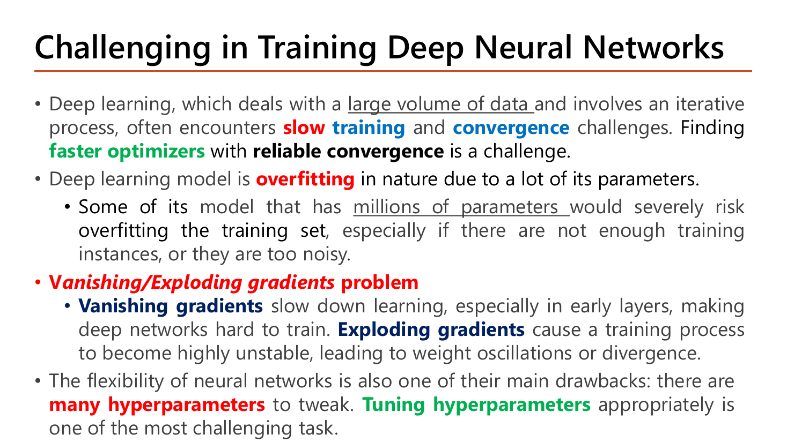
ไล่ทีละข้อพร้อมเหตุผลที่อาจารย์ให้ไว้:
โมเดลลึกมี hidden node น้อยกว่า (30 vs 50) แต่พารามิเตอร์ มากกว่า (261 vs 201) เพราะการต่อ \(10\times10\) สองครั้งแพงกว่าการต่อ \(2\times50\) ครั้งเดียว. บทเรียน: "จำนวนพารามิเตอร์" (ตัวขับ overfit) กับ "ความลึก" (ตัวขับ vanishing) เป็นคนละปริมาณ แม้จะมาด้วยกันบ่อย ๆ.
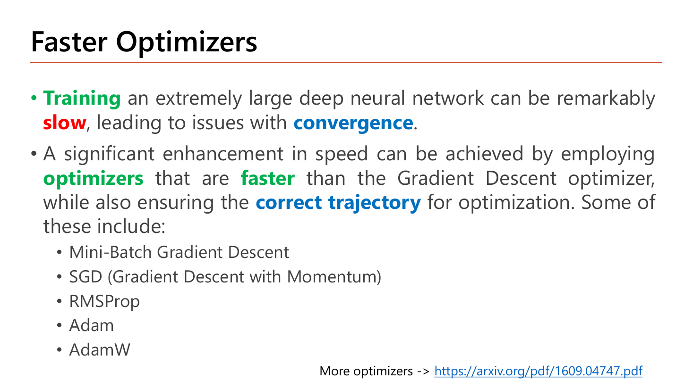
หน้านี้คือสารบัญของครึ่งแรกของบท และย้ำปัญหาข้อ 1 อีกรอบด้วยคำที่ทำสี: Training เครือข่ายใหญ่มาก ๆ อาจ slow อย่างน่าตกใจ และนำไปสู่ปัญหาเรื่อง convergence. ทางแก้คือใช้ optimizers ที่ faster กว่า Gradient Descent ธรรมดา โดยยังรักษา correct trajectory คือ "เส้นทางที่ถูกต้อง" ในการหาจุดต่ำสุด. สองเงื่อนไขนี้ต้องมาคู่กันเสมอในคำตอบข้อสอบ — เร็วขึ้น และ ยังเดินถูกทาง. รายชื่อที่อาจารย์ลิสต์ไว้เรียงตามลำดับที่จะสอน และตรงกับหัวข้อในบทนี้พอดี:
| Optimizer ที่สไลด์หน้า 6 ลิสต์ไว้ | แนวคิดหลักในหนึ่งประโยค | สอนที่ |
|---|---|---|
| Mini-Batch Gradient Descent | อัปเดตทุก ๆ กลุ่มย่อยของข้อมูล แทนที่จะรอทั้งชุด | §3 |
| SGD (Gradient Descent with Momentum) | ใช้ค่าเฉลี่ยของ gradient ที่ผ่านมาเป็นแรงส่ง | §4 |
| RMSProp | หาร gradient ด้วยรากของค่าเฉลี่ย gradient กำลังสอง | §5.1 |
| Adam | รวม Momentum + RMSProp เข้าด้วยกัน | §5.2 |
| AdamW | Adam ที่แยก weight decay ออกมาเป็นขั้นต่างหาก | §5.5 |
สังเกตว่าอาจารย์เขียน "SGD (Gradient Descent with Momentum)" ติดกันในบรรทัดเดียว ทั้งที่ในหน้า 9–10 คำว่า SGD หมายถึง "อัปเดตทีละ 1 ตัวอย่าง". นี่ไม่ใช่ความผิดพลาด แต่เป็นการใช้คำแบบที่เจอในทางปฏิบัติ: ในไลบรารีอย่าง Keras คลาส SGD คือ optimizer ที่รับ mini-batch มาอัปเดต และมีพารามิเตอร์ momentum ให้เปิดปิด — อาจารย์เองก็ย้ำในหน้า 18 ว่า "mini-batch gradient descent (often called stochastic gradient descent or SGD)". อ่านให้ปลอดภัยในข้อสอบ: ถ้าโจทย์พูดถึงสูตร ให้ยึดนิยามหน้า 9 (1 ตัวอย่าง/1 อัปเดต); ถ้าโจทย์พูดถึงโค้ด Keras ให้เข้าใจว่า SGD คือตัวที่รับ mini-batch.
ปัญหาที่อยู่ตรงหน้า: gradient ของ cost คือค่าเฉลี่ยของ gradient จากแต่ละตัวอย่าง (Lesson 3 §4). ถ้าคุณมีข้อมูล 100 ล้านแถว การจะก้าว 1 ก้าวต้องรวมทั้ง 100 ล้านแถวก่อน — ก้าวเดียวใช้เวลานานมาก. คำถามของอาจารย์ในหน้า 7–13 จึงเป็นคำถามเดียว: "ต้องเฉลี่ยกี่ตัวอย่างก่อนถึงจะยอมก้าว 1 ครั้ง?" คำตอบสามแบบ (ทั้งชุด / 1 ตัวอย่าง / กลุ่มย่อย) คือ Batch GD, SGD และ Mini-batch GD — สามอัลกอริทึมนี้ต่างกันแค่ตัวเลขตัวเดียว คือ batch size \(B\) (โดยให้ \(m\) = จำนวนตัวอย่างทั้งหมด).
สมมติน้ำหนักนักศึกษาในห้องมี 4 คน: 50, 70, 60, 80 กก. ค่าเฉลี่ยจริง \(=\frac{50+70+60+80}{4}=65\).
กฎทางสถิติที่ใช้ตลอดหัวข้อนี้: ความคลาดเคลื่อนมาตรฐานของ "ค่าเฉลี่ยจากกลุ่มตัวอย่างขนาด \(B\)" แปรผันกับ \(1/\sqrt{B}\) — ใช้ตัวอย่างมากขึ้น 100 เท่า ความแกว่งลดลง \(\sqrt{100}=10\) เท่า (ไม่ใช่ 100 เท่า). gradient ก็คือค่าเฉลี่ยตัวหนึ่ง ดังนั้นคำว่า "noisy gradient" ที่อาจารย์พูดถึงในหน้า 10 ก็คือปรากฏการณ์เดียวกันนี้เป๊ะ ๆ.

อาจารย์นิยามว่า Batch GD คือการอัปเดต weight หลังจากเทรนด้วย all training examples ครบแล้ว (นับเป็น 1 iteration เต็ม) แล้วแจงข้อดีข้อเสียเป็นหัวข้อที่ทำสีไว้ทั้งคู่:
อ่านแค่ 1,000 แถวต่อก้าว ⇒ ก้าวละ 0.0001 วินาที ⇒ 1,000 ก้าวใช้เวลา 0.1 วินาที ทั้งที่อ่านข้อมูลไปแค่ 1 ล้านแถว (1% ของ 1 epoch)
ต้นทุนของ Batch GD ไม่ได้อยู่ที่ "กี่ก้าว" แต่อยู่ที่ "ก้าวละกี่แถว" — จำนวนแถวที่อ่านต่อก้าวคือสิ่งที่ mini-batch ไปลด. นี่คือความหมายเชิงตัวเลขของคำว่า computationally expensive ในสไลด์.
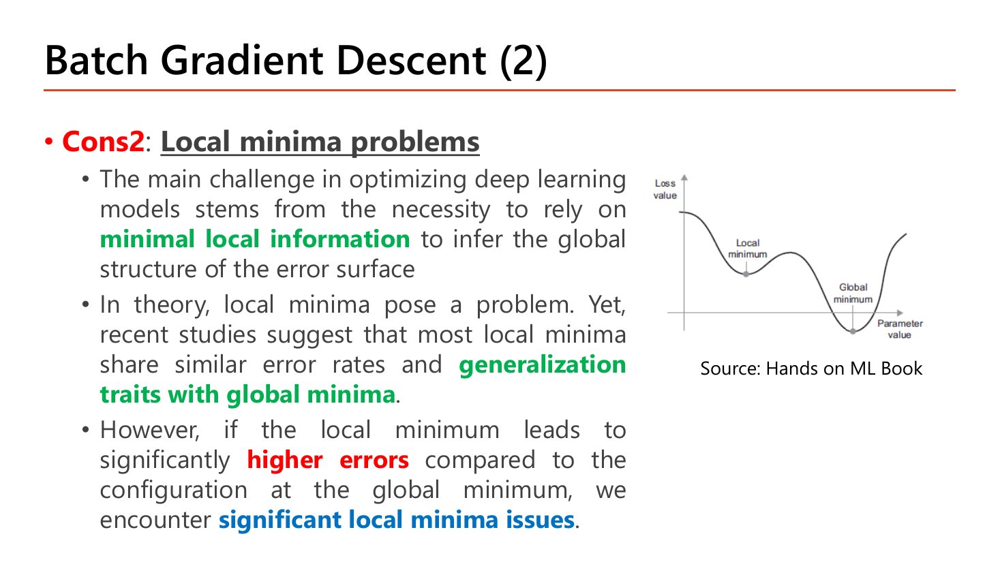
หน้านี้คือ Cons2 ของ Batch GD และเป็นหน้าที่ "คิดยากที่สุด" ในช่วงนี้ เพราะอาจารย์เล่าเป็น 3 จังหวะที่ขัดกันเอง ต้องอ่านให้ครบทั้งสามถึงจะได้ข้อสรุปที่ถูก:
สรุปแบบที่ตอบข้อสอบได้: local minima เป็นปัญหา "ในทฤษฎี" แต่โดยส่วนใหญ่ไม่ร้ายแรงในทางปฏิบัติ — จะร้ายแรงก็ต่อเมื่อ error ของมันสูงกว่า global อย่างมีนัยสำคัญ. อย่าตอบสุดโต่งไปข้างใดข้างหนึ่ง เพราะสไลด์พูดครบทั้งสองด้าน. บนภาพ loss curve ของสไลด์มีหุบสองหุบ: หุบซ้าย (Local minimum) ตื้นกว่าหุบขวา (Global minimum) — ถ้าเริ่มจากทางซ้ายแล้วเดินตาม gradient อย่างซื่อสัตย์ คุณจะจอดที่หุบซ้ายและไม่มีวันรู้เลยว่าหุบขวามีอยู่.

SGD กลับด้านกับ Batch GD สุดทาง: อัปเดต weight หลังเห็น one training instance เพียงตัวเดียว (นับเป็น 1 iteration) — อาจารย์วงเล็บไว้ว่าวิธีนี้ยังเรียกว่า online learning เพราะเหมาะกับสถานการณ์ที่ข้อมูลไหลเข้ามาทีละชิ้นแบบเรียลไทม์ เรียนทันทีที่ข้อมูลมาถึงโดยไม่ต้องเก็บสะสม. ข้อดีสองข้อที่ทำสี:
saddle point คืออะไร (คำที่สไลด์ใช้แต่ไม่ได้นิยาม): จุดที่ gradient เป็นศูนย์ แต่ไม่ใช่จุดต่ำสุด — มันต่ำสุดในบางทิศและสูงสุดในอีกทิศ เหมือนอานม้า: นั่งอยู่ตรงกลางอาน หน้า-หลังลาดลง แต่ซ้าย-ขวาลาดขึ้น. บริเวณ "flat region" รอบ ๆ saddle point อันตรายกว่าตัวจุดเอง เพราะ gradient เล็กมากจนก้าวแทบไม่ขยับ — ภาพคู่ด้านล่างของสไลด์แสดงสองสถานการณ์นี้: ภาพซ้ายเส้นทางจอดค้างที่หลุมตื้น (เครื่องหมาย ✗) ขณะที่จุดต่ำสุดจริง (★) อยู่อีกฟาก; ภาพขวาเส้นทางไต่ผ่านพื้นราบยาว ๆ กลางกราฟแล้วยังไปถึง ★ ได้.
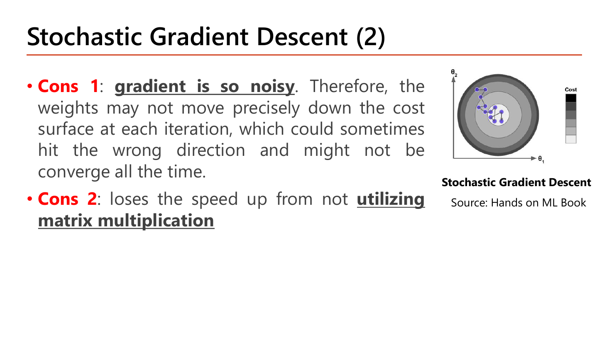
ราคาที่ต้องจ่ายมีสองข้อ และอาจารย์ทำสีหัวข้อทั้งคู่:

นิยาม: อัปเดต weight ทุก ๆ training set size จำนวนหนึ่ง ซึ่งเรียกอีกชื่อว่า batch size. ตัวอย่างที่อาจารย์ยกคือตัวอย่างที่ต้องจำให้ได้ เพราะเป็นตัวเลขที่ใช้ถามในข้อสอบได้ทันที: มีข้อมูล 10,000 ตัวอย่าง แบ่งแบบสุ่มเป็น 10 mini-batch ⇒ แต่ละ mini-batch มี 1,000 ตัวอย่าง หรือ 10% ของข้อมูลทั้งหมด (ตัวเลข 10% คือตัวเลขที่อาจารย์เขียนกำกับไว้ข้างแต่ละก้อนบนสไลด์). ก่อนแบ่งต้องทำ Shuffling คือสลับลำดับข้อมูลก่อน — บนสไลด์คอลัมน์ซ้ายเรียงเลข 1,2,3,4,5,…,10000 ตามลำดับเดิม แต่หลังสลับแล้วก้อนแรกมีสมาชิกอย่าง 2 และ 300, ก้อนที่สองมี 7101 กับ 3030, ก้อนสุดท้ายมี 100 กับ 76 — คือเลขกระโดดไปมาไม่เรียงกันแล้ว.
ทำไมต้อง shuffle (สไลด์เขียนคำนี้ไว้แต่ไม่อธิบายเหตุผล — เสริมความเข้าใจ นอกสไลด์): ถ้าข้อมูลถูกจัดเรียงตาม label เช่น 5,000 แถวแรกเป็นคลาส A และ 5,000 แถวหลังเป็นคลาส B การแบ่งโดยไม่สลับจะทำให้ mini-batch ที่ 1–5 เห็นแต่คลาส A ล้วน ๆ. โมเดลจะถูกดึงไปทางคลาส A ห้าก้าวติด แล้วถูกดึงกลับมาทางคลาส B อีกห้าก้าว — เหมือนถูกกระชากไปมา. การสลับทำให้ทุก mini-batch เป็น "ตัวแทนย่อ" ของข้อมูลทั้งชุด ทิศของ gradient แต่ละก้อนจึงใกล้เคียงทิศจริง.
ข้อดีที่อาจารย์ทำสีไว้ในหน้านี้มี 3 กลุ่ม:
epoch = จำนวนรอบที่โมเดล "ดูข้อมูลครบทั้งชุด" · iteration = จำนวนครั้งที่ weight ถูกอัปเดต
ในนิยามของ Batch GD หนึ่ง iteration = หนึ่ง epoch (เพราะอ่านครบชุดแล้วอัปเดตทีเดียว) แต่พอเป็น mini-batch หนึ่ง epoch มีหลาย iteration. คำถามคลาสสิก: "ข้อมูล 10,000 แถว batch size 1,000 เทรน 30 epoch มีการอัปเดต weight กี่ครั้ง?" ⇒ \(10\times30=300\) ครั้ง.
ตรงกับคำว่า "10 mini-batch" และ "10%" ต่อก้อนบนสไลด์พอดี
| \(B\) | เรียกว่าอะไร | iteration/epoch |
|---|---|---|
| 10,000 | Batch GD (\(B=m\)) | 1 |
| 1,000 | Mini-batch (ตัวอย่างสไลด์) | 10 |
| 256 | Mini-batch | \(\lceil 39.06\rceil = 40\) |
| 64 | Mini-batch (ค่าที่ใช้ทดลองหน้า 24) | \(\lceil156.25\rceil = 157\) |
| 32 | Mini-batch | \(\lceil312.5\rceil = 313\) |
| 1 | SGD (\(B=1\)) | 10,000 |
ใช้กฎ \(1/\sqrt{B}\) จากกล่อง "ต้องรู้ก่อน": เทียบ \(B=1\) กับ \(B=1{,}000\) ความแกว่งต่างกัน \(\sqrt{1000}\approx 31.6\) เท่า — ไม่ใช่ 1,000 เท่า. นี่คือเหตุผลที่ mini-batch เล็ก ๆ ก็ "นิ่งพอ" แล้ว ไม่ต้องใช้ทั้งชุด
\(B\) เล็ก ⇒ อัปเดตบ่อย (ความคืบหน้าต่อ epoch สูง) แต่ทิศ noisy; \(B\) ใหญ่ ⇒ ทิศนิ่ง แต่อัปเดตน้อยและกินหน่วยความจำ. สามอัลกอริทึมของหน้า 7–11 คือ ค่า \(B\) สามค่าบนแกนเดียวกัน ไม่ใช่สามความคิดที่ไม่เกี่ยวกัน — จำแบบนี้แล้วตอบข้อสอบเปรียบเทียบได้ทุกแบบ.
![Slide Choosing an Appropriate Batch Size: for small datasets under 2000 use batch size equal to m; for large datasets use values between one and m with common starting points 32 to 256 depending on memory, hardware utilization, optimization and task; powers of 2 such as 32 64 128 256 are common for GPU efficiency but not a requirement; a contour plot compares the paths of batch, mini-batch and stochastic gradient descent, with a note that SGD and mini-batch also reach the minimum with a good learning schedule](../assets/slides/dl4-p12-choosing-batch-size.png)
คำแนะนำของอาจารย์เป็นเงื่อนไขแบบ "ถ้า…ให้…" ซึ่งข้อสอบชอบถามแบบสลับเงื่อนไข ดังนั้นจำเป็นคู่:
| สถานการณ์ | สไลด์บอกให้ทำอะไร | เหตุผล |
|---|---|---|
| ข้อมูลเล็ก (i.e. \(< 2{,}000\)) | ใช้ batch size = \(m\) ไปเลย (คือ Batch GD เต็ม) | ข้อมูลน้อยพอที่จะคำนวณครบทั้งชุดต่อก้าวโดยไม่ช้า จึงไม่มีเหตุผลต้องยอมรับ noise |
| ข้อมูลใหญ่ | ใช้ค่าระหว่าง 1 ถึง \(m\); จุดเริ่มต้นที่นิยมคือ 32–256 | ค่าที่เหมาะขึ้นกับหน่วยความจำ, การใช้งานฮาร์ดแวร์, การ optimize และตัวงานเอง |
| เลือกเลขไหนในช่วงนั้น | เลขที่เป็นกำลังของ 2 (32, 64, 128, 256) เป็นที่นิยม | มักทำงานได้มีประสิทธิภาพกับฮาร์ดแวร์ GPU — แต่ไม่ใช่ข้อบังคับ (สไลด์ขีดเส้นใต้ "but this is not a requirement" ไว้เอง) |
ภาพ contour ที่มุมขวาของหน้านี้เทียบเส้นทางสามสีบนพื้นผิว cost เดียวกัน: เส้นน้ำเงิน (Batch GD) เดินเป็นเส้นตรงเรียบ ๆ เข้าหาจุดแดงกลางภาพ, เส้นเขียว (Mini-batch) หยักเล็กน้อยแต่ยังมุ่งตรง, เส้นม่วง (SGD) หยักถี่และกว้างมากจนวนรอบจุดหมายหลายรอบ — ความหยักของทั้งสามเส้นเรียงตามขนาด \(B\) จากใหญ่ไปเล็กเป๊ะ ๆ ตามกฎ \(1/\sqrt{B}\). และ Note ในกรอบท้ายสไลด์เตือนว่า Stochastic GD กับ Mini-batch GD ก็ไปถึงจุดต่ำสุดได้เหมือนกัน ถ้าใช้ learning schedule ที่ดี — ประโยคนี้แก้ความเข้าใจผิดว่า "SGD ไม่มีวันลู่เข้า" ซึ่งไม่จริง มันแค่ต้องลด learning rate ลงตามเวลา (หัวข้อ §4.4).

นี่คือแบบฝึกหัดที่อาจารย์เว้นคำตอบไว้ — มีแค่แกน \(J\) กับ #epochs สองคู่ คู่ซ้ายชื่อ Batch Gradient Descent คู่ขวาชื่อ Mini-Batch Gradient Descent. เฉลยเต็ม:
| Batch GD | Mini-Batch GD | |
|---|---|---|
| รูปร่างเส้น | ลดลงเรียบทุก epoch ไม่มีเด้งขึ้น | ลดลงโดยรวมแต่ ขึ้น ๆ ลง ๆ ระหว่างทาง |
| เหตุผล | ทุกก้าวคำนวณจากข้อมูลชุดเดิมทั้งหมด ⇒ \(J\) ที่วัดคือฟังก์ชันเดียวกันเสมอ และ gradient descent รับประกันว่าลดลง (ถ้า \(\alpha\) ไม่ใหญ่เกิน) | แต่ละก้าววัด cost จาก mini-batch คนละก้อน ⇒ ก้อนที่ "ยาก" ให้ cost สูงกว่าก้อนที่ "ง่าย" แม้โมเดลจะดีขึ้นจริง |
| จุดที่ห้ามสรุปผิด | ถ้าเส้นเด้งขึ้น แปลว่า \(\alpha\) สูงเกินไป (เป็นสัญญาณผิดปกติ) | เส้นเด้งขึ้นเป็นเรื่องปกติ ไม่ใช่ bug — ให้ดูแนวโน้มเฉลี่ยแทน |
หลักฐานตัวเลขจริงของอาจารย์เองอยู่ที่หน้า 24: กราฟ cost ของ Mini-Batch GD แกว่งอยู่ระหว่างประมาณ 0.27 ถึง 0.58 ตลอด 50 epoch โดยมีแนวโน้มลดลงช้า ๆ — ตรงกับช่องขวาของตารางนี้ทุกประการ. ถ้าคุณเจอกราฟแบบนั้นในข้อสอบแล้วตอบว่า "โมเดลไม่เรียนรู้" จะผิด คำตอบที่ถูกคือ "เป็นลักษณะปกติของ mini-batch เพราะแต่ละก้าวเห็นข้อมูลคนละก้อน".
ปัญหาที่เหลืออยู่: mini-batch แก้เรื่อง "ก้าวถี่" ได้แล้ว แต่ยังมีอาการที่แก้ไม่ได้ — เดินซิกแซก. ลองนึกถึงหุบเขาแคบยาวรูปตัว U: ความชันด้านข้าง (ผนังหุบ) สูงมาก ส่วนความชันตามแนวยาวของหุบ (ทิศที่เราอยากไป) ต่ำมาก. gradient descent จึงกระเด้งซ้าย-ขวาระหว่างผนังทั้งสองข้างรุนแรงกว่าที่มันจะไหลไปตามหุบ — เสียเวลาไปกับทิศที่ไม่ได้พาเข้าใกล้เป้าหมายเลย. Momentum คือคำตอบของอาจารย์สำหรับอาการนี้.

อาจารย์อ้างอิง Momentum optimization (Polyak, 1964) ว่าช่วย accelerate faster convergence ไปใน right direction โดยวิธีคือ "นำ gradient ที่ผ่านมาในแต่ละ iteration มาพิจารณาด้วย" ผ่านการคำนวณ exponential weighted averages of the gradients แล้วใช้ค่าเฉลี่ยตัวนั้นไปอัปเดต weight แทนที่จะใช้ gradient สด ๆ. เหตุผลที่ทำแบบนี้ได้ผลอยู่ในบรรทัดสุดท้ายที่ทำสีเช่นกัน: ค่าเฉลี่ยแบบเอ็กซ์โพเนนเชียลให้ค่าประมาณที่ "ใกล้ actual derivate มากกว่าการคำนวณแบบ noisy ของเรา" — คือถือว่า gradient จาก mini-batch เดียวเป็นค่าที่ผิดพลาดได้ แต่ค่าเฉลี่ยของหลาย ๆ ก้อนย้อนหลังใกล้ "อนุพันธ์จริง" มากกว่า.
ภาพประกอบหน้านี้อาจารย์กำกับไว้เองว่าเป็น top-down view ของ 3D loss surface คือมองวงรีซ้อนกันจากด้านบนเหมือนแผนที่เส้นชั้นความสูง. เส้นทางที่วาดเป็นฟันเลื่อยถี่ ๆ มีป้ายกำกับสองป้าย: "Unwanted oscillations in the vertical direction" (การแกว่งที่ไม่ต้องการในแนวตั้ง) กับ "Progress towards the minimum in the horizontal direction" (ความคืบหน้าจริงอยู่ในแนวนอน) ปลายทางคือ Target minimum. อ่านความหมายเป็นตัวเลขได้แบบนี้: ถ้าใน 10 ก้าว gradient แนวตั้งสลับเครื่องหมาย \(+,-,+,-,\dots\) ตลอด ผลรวมของมันเกือบเป็นศูนย์ (เสียเปล่า) ในขณะที่ gradient แนวนอนเป็นบวกเล็ก ๆ ทั้ง 10 ก้าว ผลรวมจึงสะสมเป็นค่ามาก — Momentum คือเครื่องมือที่ทำให้ทิศที่ "ไปทางเดิมสม่ำเสมอ" ได้ก้าวใหญ่ขึ้น ส่วนทิศที่ "สลับไปมา" หักล้างกันเองจนเหลือเกือบศูนย์.
ค่าเฉลี่ยธรรมดา (average): มีตัวเลข 3 ตัว 10, 20, 30 ⇒ เอามาบวกกันแล้วหารจำนวนตัว \(\frac{10+20+30}{3}=20\). มองอีกแบบ: ทุกตัวได้ "น้ำหนัก" เท่ากันคือ \(\tfrac13\) แล้วเอาน้ำหนักคูณค่าแล้วบวกกัน \(\tfrac13(10)+\tfrac13(20)+\tfrac13(30)=20\).
ค่าเฉลี่ยถ่วงน้ำหนัก (weighted average): เปลี่ยนน้ำหนักให้ไม่เท่ากัน เช่นให้ตัวล่าสุดสำคัญกว่า — ใช้น้ำหนัก 0.2, 0.3, 0.5 (ต้องรวมกันได้ 1 เสมอ):
$$0.2(10)+0.3(20)+0.5(30) = 2+6+15 = 23$$ได้ 23 ซึ่งเอนไปทาง 30 (ตัวที่ได้น้ำหนักมากสุด) มากกว่าค่าเฉลี่ยธรรมดา 20. เงื่อนไขเดียวที่ต้องจำ: ถ้าน้ำหนักรวมกันได้ 1 ค่าเฉลี่ยจะอยู่ในช่วงเดียวกับข้อมูล; ถ้าน้ำหนักรวมได้น้อยกว่า 1 ผลลัพธ์จะถูกดึงลงต่ำกว่าความจริง — จำข้อนี้ไว้ให้ดี เพราะมันคือต้นตอของ "bias" ที่ Adam ต้องแก้ในหน้า 23.
Exponential weighted average ก็คือ weighted average ที่น้ำหนักถูกกำหนดด้วยสูตรเดียว: ตัวล่าสุดได้มากสุด แล้วลดลงเป็นทวีคูณเมื่อย้อนไปอดีต.
![Slide Exponential Weighted Moving Averages: the exponential weighted average gives a weighted average of the last n values where the weighting decreases exponentially with each previous value; formula v_t = beta*v_(t-1) + (1-beta)*value_t with beta in [0,1]; the definition expanded for consecutive v at t, t-1 and t-2 and combined into a single expression; with a price chart comparing a 30 day SMA and a 30 day EMA](../assets/slides/dl4-p15-ewa-expansion-derivation.png)
อาจารย์เริ่มจากประโยคนิยามที่เน้นไว้: EWA ให้ "weighted average ของ \(n\) ค่าล่าสุด โดยน้ำหนักลดลงแบบเอ็กซ์โพเนนเชียลในทุก ๆ ค่าที่ย้อนไป" แล้วให้สูตรตัวเดียว:
$$v_t = \beta\,v_{t-1} + (1-\beta)\,\text{value}_t\qquad\text{where }\beta\in[0,1]$$ค่าเฉลี่ยใหม่ = (สัดส่วน \(\beta\) ของค่าเฉลี่ยเก่า) + (สัดส่วน \(1-\beta\) ของค่าใหม่ที่เพิ่งเห็น)
สังเกตว่าสูตรนี้เก็บตัวเลขไว้แค่ ตัวเดียว คือ \(v\) — ไม่ต้องจำค่าย้อนหลัง 30 ค่าเหมือนค่าเฉลี่ยเคลื่อนที่ธรรมดา. กราฟราคาหุ้นที่อาจารย์แปะไว้เทียบให้เห็นความต่างนี้: เส้นน้ำเงินคือราคาจริงที่กระโดดขึ้นลงรายวัน ส่วนเส้นแดง (30 day SMA) กับเส้นเหลือง (30 day EMA) เรียบทั้งคู่ แต่ EMA ขยับตามราคาจริงไวกว่า SMA เล็กน้อยในช่วงที่ราคาพุ่ง (ราวช่วงกลางกราฟที่ราคาเด้งขึ้นแตะ 125) เพราะ EMA ให้น้ำหนักค่าล่าสุดมากกว่า — คุณสมบัติ "เรียบแต่ยังไว" ตัวนี้เองที่ Momentum ต้องการจาก gradient.
ได้ 15 ทั้งที่ค่าจริงคือ 30 — ต่ำไปครึ่งหนึ่ง เพราะครึ่งหนึ่งของน้ำหนักถูกจ่ายให้ \(v_0\) ที่ยังเป็นศูนย์
สองข้อสังเกตที่ต้องจำ: (1) \(v_4=29.875\) ยังต่ำกว่าค่าเฉลี่ยจริง 31 อยู่เล็กน้อย — นี่คือ bias ที่ตกค้างจากการเริ่มที่ 0 และจะยิ่งหนักเมื่อ \(\beta\) ใกล้ 1. (2) \(v\) เรียบกว่าข้อมูลดิบ: ข้อมูลกระโดด 30→32→28→34 (สวิง 6 หน่วย) แต่ \(v\) ไต่ขึ้นทีละน้อย 15→23.5→25.75→29.875 ไม่ตอบสนองต่อการดิ่งลงที่ \(t=3\) มากนัก. นี่คือสิ่งที่เราต้องการจาก gradient ที่ noisy.
ทุกครั้งที่ย้อนไปอีกหนึ่งขั้น น้ำหนักถูกคูณ \(\beta=0.9\) เพิ่ม — การคูณค่าคงที่ซ้ำ ๆ คือนิยามของ "ลดแบบเอ็กซ์โพเนนเชียล" จึงเป็นที่มาของชื่อ
| \(t\) | \(1-\beta^t\) เมื่อ \(\beta=0.5\) | \(1-\beta^t\) เมื่อ \(\beta=0.9\) |
|---|---|---|
| 1 | 0.5000 | 0.1000 |
| 2 | 0.7500 | 0.1900 |
| 4 | 0.9375 | 0.3439 |
| 10 | 0.9990 | 0.6513 |
น้ำหนักรวมเป็น \(1-\beta^t\) ซึ่งน้อยกว่า 1 เสมอในช่วงแรก และเข้าใกล้ 1 เมื่อ \(t\) โตขึ้น. ตามกฎในกล่อง "ต้องรู้ก่อน" น้ำหนักรวมไม่ถึง 1 แปลว่าค่าที่ได้ถูกดึงลงต่ำกว่าความจริง — ที่ \(\beta=0.9,\ t=1\) จ่ายน้ำหนักไปแค่ 10% ค่าที่ได้จึงเล็กกว่าของจริง 10 เท่า! นี่คือคำอธิบายเชิงตัวเลขว่าทำไม Adam ต้องมี bias correction ที่หารด้วย \(1-\beta^t\) พอดีเป๊ะ (หน้า 23) — หารด้วยน้ำหนักรวมที่จ่ายไปจริง ก็ได้ค่าเฉลี่ยที่ "เต็ม 100%" กลับคืนมา.
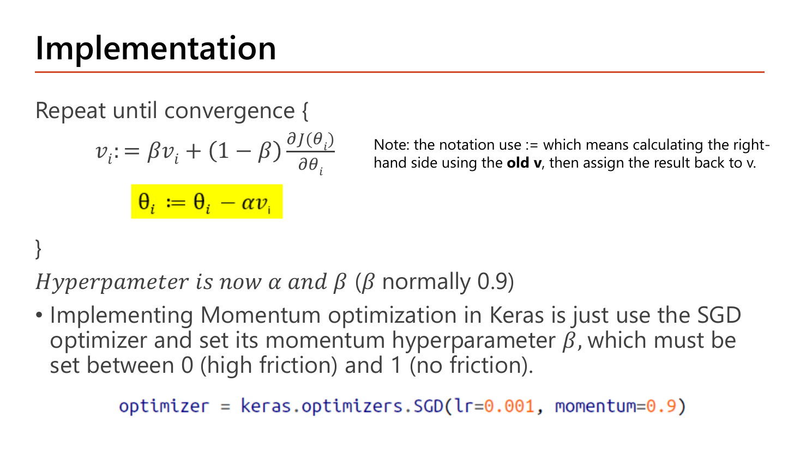
อาจารย์เขียน pseudocode สองบรรทัด โดยไฮไลต์สีเหลืองไว้ที่บรรทัดอัปเดต \(\theta\) เพราะเป็นบรรทัดที่เปลี่ยนไปจาก gradient descent เดิม:
$$\text{Repeat until convergence}\ \Big\{\ \ v_i := \beta v_i + (1-\beta)\frac{\partial J(\theta_i)}{\partial\theta_i};\qquad \theta_i := \theta_i - \alpha\,v_i\ \ \Big\}$$เทียบกับ gradient descent เดิม \(\theta_i := \theta_i - \alpha\frac{\partial J}{\partial\theta_i}\) จะเห็นว่าจุดเดียวที่ต่างคือ เอา \(v_i\) มาแทนที่ gradient สด — โครงอื่นเหมือนเดิมหมด. และอาจารย์ทิ้ง Note ไว้ข้าง ๆ ว่าเครื่องหมาย \(:=\) หมายถึง "คำนวณฝั่งขวาโดยใช้ \(v\) ตัวเก่า แล้วค่อยเอาผลลัพธ์ไปทับ \(v\)" — ฟังดูเหมือนจู้จี้ แต่สำคัญมากเวลาเขียนโค้ดเอง เพราะถ้าคุณอัปเดต \(v\) ทีละตัวโดยใช้ค่าที่เพิ่งอัปเดตไปแล้ว ผลจะผิด. hyperparameter ของ Momentum จึงมี 2 ตัว คือ \(\alpha\) (learning rate) และ \(\beta\) (โดยปกติ 0.9) — เพิ่มจาก gradient descent ธรรมดาที่มีแค่ \(\alpha\).
\(v\) สะสมโตขึ้นเรื่อย ๆ (ค่าเหล่านี้คือ \(1-0.9^t\) พอดี ตามที่พิสูจน์ไว้ใน §4.1; ที่ \(t=10\) จะได้ 0.6513)
\(v\) วนเวียนใกล้ศูนย์ เพราะค่าบวกกับค่าลบหักล้างกันทุกก้าว
หลัง 4 ก้าว ทิศที่สม่ำเสมอได้ขนาดก้าว 0.3439 ส่วนทิศที่แกว่งเหลือ 0.0181 — ต่างกัน 19 เท่า ทั้งที่ gradient ดิบมีขนาดเท่ากัน (\(|{\pm}1|\)) ทุกก้าว. นี่คือความหมายเชิงตัวเลขของป้าย "Unwanted oscillations" กับ "Progress towards the minimum" บนภาพหน้า 14: Momentum ไม่ได้ลบการแกว่งทิ้ง แต่ทำให้การแกว่งหักล้างกันเองจนเหลือน้อย ขณะที่ทิศที่ถูกต้องถูกทบไปเรื่อย ๆ.
สำหรับการใช้งานจริง อาจารย์บอกว่า "Implementing Momentum optimization in Keras is just use the SGD optimizer and set its momentum hyperparameter \(\beta\)" ซึ่งต้องตั้งค่าระหว่าง 0 (high friction — ฝืดมาก เหมือนไม่มี momentum) ถึง 1 (no friction — ไร้แรงเสียดทาน) แล้วให้โค้ดบรรทัดเดียวไว้ท้ายสไลด์:
optimizer = keras.optimizers.SGD(lr=0.001, momentum=0.9)| โค้ด | ทำอะไร |
|---|---|
keras.optimizers.SGD(...) | สร้างอ็อบเจ็กต์ optimizer ตระกูล gradient descent ของ Keras. ชื่อคลาสคือ SGD แต่ตัวมันรับ mini-batch มาอัปเดต (ขนาดก้อนถูกกำหนดตอน model.fit(..., batch_size=...) ไม่ใช่ที่นี่) — ตรงกับที่อาจารย์เขียนในหน้า 18 ว่า mini-batch GD "often called SGD" |
lr=0.001 | learning rate \(\alpha\) = 0.001 คือตัวคูณขนาดก้าวในบรรทัด \(\theta_i := \theta_i - \alpha v_i\). lr เป็นชื่อย่อเดิมของอาร์กิวเมนต์ learning_rate |
momentum=0.9 | คือ \(\beta\) ในสูตร. ค่า 0 = ไม่มี momentum (กลายเป็น gradient descent ธรรมดา), ค่าใกล้ 1 = จำอดีตยาว "ลื่น" มาก. 0.9 คือค่าปกติที่อาจารย์ระบุ |
| ผลของบรรทัดนี้ทั้งหมด | ยังไม่มีการเทรนเกิดขึ้น — แค่เตรียมอ็อบเจ็กต์ไว้ส่งให้ model.compile(optimizer=optimizer, loss=...) ในขั้นถัดไป |
ผลลัพธ์ที่คาด: บรรทัดนี้ไม่พิมพ์อะไรออกมา ตัวแปร optimizer จะเก็บอ็อบเจ็กต์ SGD ที่มี learning_rate = 0.001 และ momentum = 0.9 อยู่ข้างใน (ตรวจได้ด้วย optimizer.momentum). เสริมความเข้าใจ (นอกสไลด์): ใน Keras รุ่นใหม่ ๆ ชื่อ lr= ถูกเลิกใช้และเปลี่ยนเป็น learning_rate= — ถ้าข้อสอบให้เติมโค้ดโดยไม่ได้ระบุเวอร์ชัน ให้ยึดตามที่สไลด์เขียนไว้.
Momentum แต่อยู่ใน SGD ผ่านอาร์กิวเมนต์ momentum=. กับดัก: ตัวเลือกที่เขียน keras.optimizers.Momentum(0.9) หรือใส่ค่า \(\beta\) ผิดช่องเป็น SGD(0.9, momentum=0.001) (สลับ \(\alpha\) กับ \(\beta\)).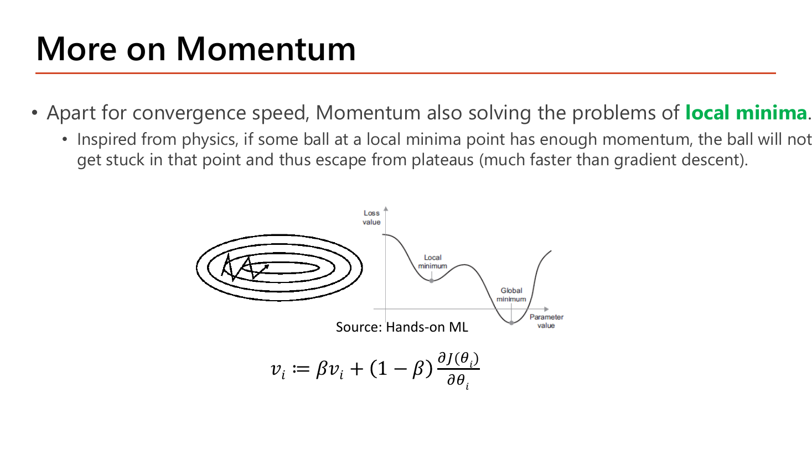
นอกจากเรื่องความเร็วแล้ว Momentum ยังแก้ปัญหา local minima ได้ด้วย โดยอาจารย์อธิบายด้วยอุปมาทางฟิสิกส์: ถ้าลูกบอลที่กลิ้งมาถึงจุด local minimum มี โมเมนตัมมากพอ มันจะไม่ติดอยู่ตรงนั้น และจะหลุดออกจาก plateau (พื้นราบ) ได้ "เร็วกว่า gradient descent มาก". ลองคิดเป็นตัวเลขด้วยสูตรเดียวกันที่เพิ่งคำนวณ: สมมติลูกบอลกลิ้งลงเนินมาแล้ว 4 ก้าวโดย gradient เป็น \(+1\) ตลอด ได้ \(v_4=0.3439\); พอถึงก้นหลุมตื้น ๆ ที่ gradient กลายเป็น 0 พอดี ก้าวถัดไปยังเป็น \(v_5 = 0.9(0.3439)+0.1(0)=0.3095\) — ยังเดินต่อได้เกือบเท่าเดิม ทั้งที่ gradient เป็นศูนย์. เทียบกับ gradient descent ธรรมดาที่ \(\alpha\times0=0\) คือหยุดนิ่งสนิททันที. ความต่างนี้คือคำตอบของคำถาม "ทำไม Momentum หนีหลุมได้".
ภาพบนสไลด์แปะไว้สองรูป: รูปซ้ายเป็นเส้นชั้นความสูงรูปวงรีพร้อมเส้นทางหยักที่วิ่งเข้าสู่กลางวง (การซิกแซกที่ลดลง) และรูปขวาเป็นกราฟ Loss ที่มีหลุมตื้น (Local minimum) ก่อนหลุมลึก (Global minimum) — สองรูปนี้คือสองปัญหาที่ Momentum แก้พร้อมกัน: ซิกแซก (จากหน้า 14) และติดหลุม (จากหน้า 8).
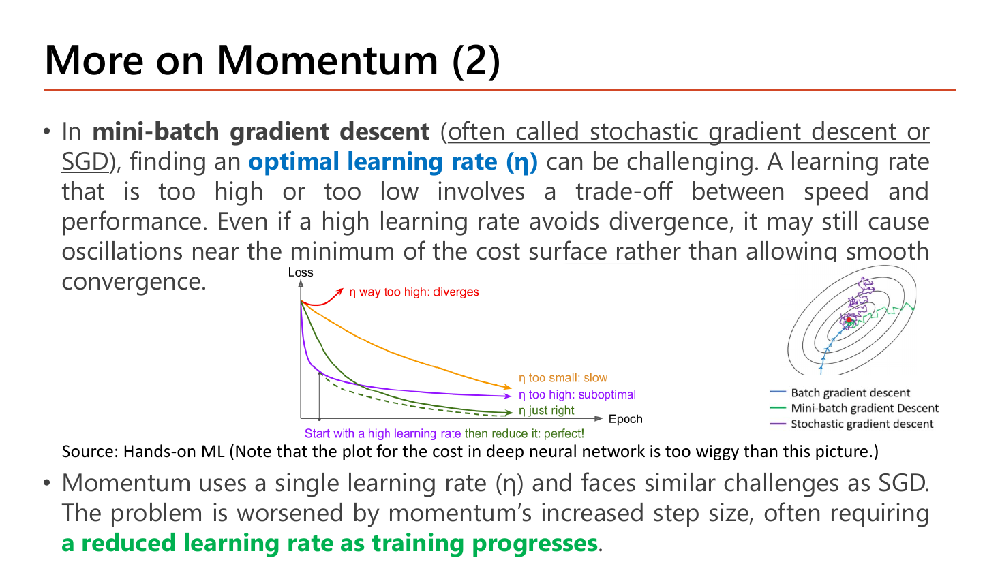
อาจารย์เริ่มด้วยประโยคที่ยืนยันเรื่องคำศัพท์ที่เราคุยกันไว้ใน §2: "In mini-batch gradient descent (often called stochastic gradient descent or SGD)" — แล้วบอกว่าการหา optimal learning rate (η) เป็นเรื่องท้าทาย. เหตุผล: \(\eta\) สูงหรือต่ำเกินไปคือการแลกกันระหว่าง ความเร็ว กับ ประสิทธิภาพ. และประโยคสำคัญที่มักถูกเข้าใจผิด: ถึงแม้ \(\eta\) สูงจะไม่ทำให้ลู่ออก (diverge) มันก็ยังอาจทำให้แกว่งอยู่รอบ ๆ จุดต่ำสุดแทนที่จะลู่เข้าอย่างนุ่มนวล — คือ "ไม่ระเบิด" ไม่ได้แปลว่า "ดี".
กราฟ Loss เทียบ Epoch บนสไลด์ติดป้ายเส้นไว้ 4 เส้น ซึ่งเป็นชุดคำตอบสำเร็จรูปของข้อสอบเรื่อง learning rate: เส้นที่พุ่งขึ้นคือ "η way too high: diverges"; เส้นส้มที่ลดช้าและยังสูงอยู่ตอนจบคือ "η too small: slow"; เส้นที่ลดเร็วแต่ไปจอดที่ค่าสูงกว่าที่ควรคือ "η too high: suboptimal"; เส้นที่ลดเร็วและลงต่ำสุดคือ "η just right". และข้อความสีม่วงใต้กราฟสรุปกลยุทธ์ที่ดีที่สุดไว้ว่า "Start with a high learning rate then reduce it: perfect!". ประโยคปิดของหน้านี้คือที่มาของหัวข้อถัดไป: Momentum ใช้ learning rate ค่าเดียวและเจอปัญหาเดียวกับ SGD แต่หนักกว่าเพราะขนาดก้าวที่ใหญ่ขึ้นจาก momentum เอง จึงมักต้องการ a reduced learning rate as training progresses.
ลดเชิงเส้น (linear) = ลบ จำนวนเท่ากันทุกรอบ หรือ (อย่างที่สไลด์ใช้) หารครึ่งทุกช่วงเวลาที่กำหนด: 100 → 50 → 25 → 12.5
ลดเอ็กซ์โพเนนเชียล (exponential) = คูณ ด้วยตัวเลขเดิมทุกรอบ: คูณ 0.1 ทุกครั้ง ⇒ 100 → 10 → 1 → 0.1
เขียนเป็นสูตรทั่วไป \(\alpha_t = \alpha_0 \cdot r^{\,k}\) เมื่อ \(r\) = ตัวคูณต่อรอบ และ \(k\) = จำนวนรอบที่ผ่านไป. จุดที่ต้องระวัง: การลดแบบคูณไม่มีวันถึงศูนย์ (คูณ 0.1 ไปเรื่อย ๆ ได้ 0.1, 0.01, 0.001, … เล็กลงแต่ยังเป็นบวกเสมอ) แต่มันเล็กลงเร็วมากในช่วงแรก — เร็วกว่าการหารครึ่งทุกครั้งหลายเท่า. สังเกตว่านี่คือกลไกเดียวกับน้ำหนัก \(\beta^k\) ของ EWA ใน §4.1 เป๊ะ ๆ เพียงแต่เอามาใช้กับ learning rate แทนที่จะใช้กับน้ำหนักของ gradient.

วิธีหนึ่งที่จะลด learning rate ระหว่างเทรนคือตั้ง learning rate decay โดยเฉพาะเมื่อเทรนด้วย minibatch ขนาดเล็ก (ซึ่ง noisy มากตามกฎ \(1/\sqrt B\) จึงต้องก้าวสั้นลงเมื่อเข้าใกล้เป้า). อาจารย์อธิบายสถานการณ์ในอุดมคติไว้ว่า: พารามิเตอร์ที่ถึงจุดเหมาะสมแล้วควรชะลอหรือหยุดเรียน ส่วนพารามิเตอร์ที่ยังอยู่ไกลจากจุดเหมาะสมควรเดินต่อ — สังเกตให้ดีว่านี่คือคำบรรยายของ "อุดมคติ" ที่ learning rate decay ตัวเดียวทำไม่ได้ เพราะมันลดอัตราให้ทุกพารามิเตอร์พร้อมกันหมด. ความอึดอัดข้อนี้เองที่หน้า 20 จะแก้ด้วย adaptive optimizer ที่ปรับอัตราให้ แต่ละพารามิเตอร์แยกกัน. สองกลยุทธ์ที่สไลด์ยกตัวอย่างพร้อมกราฟ 20 epoch:
ตรงกับกราฟซ้ายของสไลด์ที่เป็นบันไดลง 4 ขั้นใน 20 epoch
ตรงกับกราฟขวาที่ดิ่งฮวบหลัง epoch 8 แล้วแบนเกือบติดแกนนอน
ที่ epoch 16 แบบเอ็กซ์โพเนนเชียลให้ก้าวเล็กกว่าแบบเชิงเส้นถึง 12.5 เท่า — ทั้งที่เริ่มจากค่าเดียวกัน. บทเรียน: ช่วงต้นก้าวใหญ่เพื่อเข้าใกล้เร็ว ช่วงท้ายก้าวเล็กเพื่อไม่กระโดดข้ามจุดต่ำสุด และ "เล็กแค่ไหน" ขึ้นกับว่าเลือกกลยุทธ์ไหน.
โค้ดในกรอบท้ายสไลด์แสดงวิธีทำ exponential decay ใน Keras:
lr_schedule = keras.optimizers.schedules.ExponentialDecay(
initial_learning_rate=0.1,
decay_steps=8,
decay_rate=0.1
)
optimizer = keras.optimizers.SGD(lr=0.001,
mometum=0.9,
learning_rate=lr_schedule)| โค้ด | ทำอะไร |
|---|---|
keras.optimizers.schedules.ExponentialDecay(...) | สร้าง "ตารางเวลา" ของ learning rate ไม่ใช่ตัวเลขตัวเดียว — เป็นอ็อบเจ็กต์ที่ถูกเรียกทุก step แล้วคืนค่า \(\alpha\) ของ step นั้น |
initial_learning_rate=0.1 | ค่า \(\alpha_0\) ตอนเริ่ม ตรงกับจุดเริ่มต้นของกราฟ |
decay_steps=8 | "ทุก ๆ 8 step ให้ลดหนึ่งครั้ง" — ตรงกับคำว่า "every 8 epochs" บนสไลด์ (ระวัง: ในโค้ดจริงหน่วยคือ step/iteration ไม่ใช่ epoch; ถ้า 1 epoch มี 10 mini-batch การตั้ง 8 จะหมายถึงไม่ถึงหนึ่ง epoch ด้วยซ้ำ) |
decay_rate=0.1 | ตัวคูณต่อหนึ่งรอบการลด: \(\alpha = 0.1\times 0.1^{\text{step}/8}\) |
keras.optimizers.SGD(...) | สร้าง optimizer แบบ momentum เหมือนหน้า 16 แต่คราวนี้ป้อน schedule เข้าไปแทนตัวเลขคงที่ |
learning_rate=lr_schedule | ช่อง learning_rate รับได้ทั้งตัวเลข และ อ็อบเจ็กต์ schedule — นี่คือจุดสำคัญที่สุดของโค้ดนี้ และเป็นจุดที่ข้อสอบเติมโค้ดชอบเจาะ |
lr=0.001 ในบรรทัดเดียวกัน | ขัดแย้งกันเอง: lr คือชื่อเดิมของ learning_rate การส่งทั้งสองพร้อมกันเท่ากับกำหนดค่าเดียวกันสองครั้ง ในทางปฏิบัติ lr=0.001 ไม่มีผลเพราะ schedule ทับ |
mometum=0.9 | สไลด์สะกดผิด — ชื่อจริงคือ momentum; ถ้าพิมพ์ตามนี้ Keras จะฟ้อง error เรื่องอาร์กิวเมนต์ที่ไม่รู้จัก |
ผลลัพธ์ที่คาด: เมื่อแก้การสะกดเป็น momentum และตัด lr=0.001 ออกแล้ว ค่า learning rate ที่ schedule คืนให้ในแต่ละ step (คำนวณจากสูตร \(0.1\times0.1^{\text{step}/8}\)) คือ step 0: 0.1, step 8: 0.01, step 16: 0.001, step 20: 0.00032. เสริมความเข้าใจ (นอกสไลด์): ค่าเหล่านี้ลดแบบต่อเนื่อง ไม่ใช่บันไดอย่างในกราฟ (เช่น step 4 ได้ 0.0316 ไม่ใช่ 0.1) ถ้าอยากได้บันไดเป๊ะ ๆ ตามภาพต้องใส่ staircase=True เพิ่ม ซึ่งจะให้ step 0–7 = 0.1 ทั้งหมดแล้วกระโดดลง 0.01 ที่ step 8. คำอธิบายบนสไลด์ ("multiply by 0.1 every 8 epochs") ตรงกับโหมด staircase.
ExponentialDecay อยู่ใต้ keras.optimizers.schedules และรับ 3 อาร์กิวเมนต์ initial_learning_rate, decay_steps, decay_rate ตามลำดับนี้ แล้วส่งเข้า optimizer ทางช่อง learning_rate=. กับดัก: ส่งเข้าช่อง decay= หรือสลับค่า decay_steps กับ decay_rate (8 กับ 0.1).ช่องว่างที่ยังเหลือจาก §4: learning rate decay ลดอัตราให้ทุกพารามิเตอร์พร้อมกัน ทั้งที่อาจารย์เองบอกในหน้า 19 ว่าอุดมคติคือ "ตัวที่ถึงจุดเหมาะสมแล้วให้ชะลอ ส่วนตัวที่ยังไกลให้เดินต่อ". จะทำแบบนั้นได้ต้องมีอัตราการเรียนรู้ของใครของมัน ซึ่งเป็นไปไม่ได้ถ้าเราต้องตั้งเองทีละตัว (เครือข่ายเล็ก ๆ ยังมี 261 ตัว!). ทางออกคือให้อัลกอริทึมตั้งเอง — นั่นคือ adaptive learning rate.
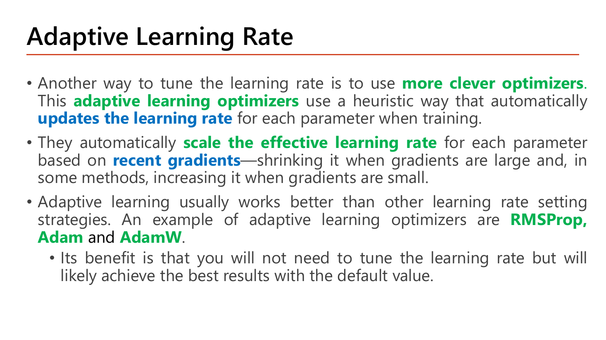
อาจารย์เสนอทางเลือกอีกทางว่าคือการใช้ more clever optimizers. กลุ่มนี้เรียกว่า adaptive learning optimizers ซึ่งใช้วิธีแบบ heuristic ที่ updates the learning rate ให้โดยอัตโนมัติ สำหรับแต่ละพารามิเตอร์ ระหว่างเทรน. กลไกที่อาจารย์บรรยายไว้ชัดเจน: พวกมัน scale the effective learning rate ของแต่ละพารามิเตอร์โดยดูจาก recent gradients — หดอัตราลงเมื่อ gradient ใหญ่ และในบางวิธีขยายอัตราขึ้นเมื่อ gradient เล็ก. ตัวอย่างที่ยกไว้คือ RMSProp, Adam และ AdamW ซึ่งเป็นสามหัวข้อย่อยที่ตามมาพอดี. ข้อดีสุดท้ายที่อาจารย์ย้ำ: "คุณจะไม่ต้องจูน learning rate แต่ก็มักได้ผลลัพธ์ที่ดีที่สุดด้วยค่า default" — ข้อนี้คือเหตุผลเชิงปฏิบัติที่คนส่วนใหญ่เปิดโปรเจกต์ใหม่ด้วย Adam โดยไม่คิดมาก.
คำว่า "effective learning rate" หมายถึงอะไร: ในสูตร \(\theta := \theta - \alpha\frac{g}{\sqrt{s+\epsilon}}\) ตัว \(\alpha\) ยังเป็นค่าเดียวสำหรับทุกพารามิเตอร์ แต่สิ่งที่ คูณจริง กับ gradient คือ \(\alpha/(\sqrt{s}+\epsilon)\) ซึ่งต่างกันไปในแต่ละพารามิเตอร์เพราะ \(s\) ของใครของมัน — ค่าประกอบนี้แหละที่เรียกว่า effective learning rate. ข้อสอบชอบถามว่า "RMSProp เปลี่ยน \(\alpha\) หรือไม่" คำตอบคือ ไม่เปลี่ยน \(\alpha\) แต่เปลี่ยนอัตราที่มีผลจริง.
กำลังสอง คือเอาเลขคูณตัวมันเอง: \(3^2=9\), \((-3)^2=9\), \(0.1^2=0.01\). คุณสมบัติที่ใช้ตรงนี้มีสองข้อ — (1) ผลลัพธ์เป็นบวกเสมอ ไม่ว่าต้นฉบับจะบวกหรือลบ (เครื่องหมายหายไป เหลือแต่ "ขนาด"); (2) มันขยายความต่าง: เลขที่ต่างกัน 10 เท่า (10 กับ 1) พอยกกำลังสองจะต่างกัน 100 เท่า (100 กับ 1).
รากที่สอง คือการทำย้อนกลับ: \(\sqrt{9}=3\), \(\sqrt{0.01}=0.1\), \(\sqrt{10}\approx3.162\). มันหด: \(\sqrt{100}=10\) — ของที่ต่างกัน 100 เท่ากลับมาต่างกัน 10 เท่า.
ทำไมสองอย่างนี้ต้องมาคู่กันเสมอ: ถ้าเราเอา \(g^2\) มาเฉลี่ยได้ \(s\) แล้ว \(s\) จะมี "หน่วย" เป็น gradient ยกกำลังสอง เทียบกับ \(g\) ตรง ๆ ไม่ได้. พอถอดราก \(\sqrt{s}\) หน่วยกลับมาเท่ากับ \(g\) แล้วอัตราส่วน \(g/\sqrt{s}\) จึงเป็นตัวเลขไร้หน่วยที่มีขนาดราว ๆ 1 — นี่คือเหตุผลที่ทุกสูตรในหัวข้อนี้หารด้วย \(\sqrt{s}\) ไม่ใช่ \(s\). ลองเองเร็ว ๆ: ถ้า \(g=0.1\) ตลอด แล้ว \(s\to0.01\), \(\sqrt{s}=0.1\), ได้ \(g/\sqrt s = 1\) พอดี.
![Slide RMSprob (Root Mean Square Propagation): Hinton 2012 maintains an exponential weight average of squared gradients for each parameter and uses it to normalize gradient updates; when a parameter has consistently larger gradients RMSProp reduces its effective learning rate by scaling the update inversely with the square root of the moving average of its squared gradients; smaller gradients get less scaling and a relatively larger effective learning rate; with the s_i update formula, the highlighted theta update divided by sqrt(s+epsilon), hyperparameters alpha 0.001 and rho 0.9, and the Keras RMSprop line](../assets/slides/dl4-p21-rmsprop-formula.png)
RMSProp (Hinton, 2012) รักษา exponential weight average ของ squared gradients ของแต่ละพารามิเตอร์ แล้วใช้มัน normalize การอัปเดตของ gradient เพื่อช่วยให้การเทรนเสถียร. สังเกตว่านี่คือ EWA ตัวเดิมจาก §4.1 เป๊ะ ๆ เพียงแต่ค่าที่เอามาเฉลี่ยเปลี่ยนจาก "gradient" เป็น "gradient ยกกำลังสอง" — และพอยกกำลังสองแล้วเครื่องหมายหายไป \(s_i\) จึงวัด "ขนาดของ gradient" ไม่ใช่ "ทิศ":
$$s_i := \rho\,s_i + (1-\rho)\left(\frac{\partial J(\theta_i)}{\partial\theta_i}\right)^{2},\qquad \theta_i := \theta_i - \alpha\,\frac{\partial J(\theta_i)/\partial\theta_i}{\sqrt{s_i+\epsilon}}$$\(s_i\) คือค่าเฉลี่ยของ "gradient กำลังสอง" ของพารามิเตอร์ตัวนี้ — ใครมี gradient ใหญ่ต่อเนื่อง \(s_i\) ยิ่งสูง แล้วก้าวของคนนั้นถูกหารด้วยรากของมัน
สไลด์เขียนกำกับในวงเล็บว่า "gradient vector is scaled down by a factor of \(\sqrt{s_i+\epsilon}\)" และกล่องไฮไลต์สีเหลืองมุมขวาคือสูตรอัปเดตเต็ม. อาจารย์อธิบายผลของมันไว้สองกรณีที่ต้องท่องเป็นคู่:
hyperparameter ของ RMSProp ตามที่สไลด์ระบุมี 2 ตัว: \(\alpha\) (ปกติ 0.001) และ \(\rho\) (ปกติ 0.9) — จุดที่ต้องระวังคือตัวที่สองใช้สัญลักษณ์ \(\rho\) (rho) ไม่ใช่ \(\beta\) และในโค้ด Keras ก็ชื่อ rho ตรงตัว.
A ก้าวใหญ่กว่า B ถึง 100 เท่า — B แทบไม่ขยับ ทั้งที่มันอาจยังอยู่ไกลจากค่าที่ดี
เท่ากันเป๊ะทั้งที่ gradient ต่างกัน 100 เท่า
RMSProp ทำให้ขนาดก้าวไม่ขึ้นกับขนาดของ gradient อีกต่อไป เหลือแต่ทิศ — A ที่เสียงดังถูกกดลง ส่วน B ที่เสียงเบาถูกดันขึ้นมาให้ก้าวได้พอ ๆ กัน ตรงกับสองบรรทัดที่อาจารย์เขียนไว้ทุกคำ. นี่ยังอธิบายด้วยว่าทำไม \(\alpha\) ของ adaptive optimizer จึงไม่ต้องจูนมาก: ขนาดก้าวถูกตรึงไว้ที่ราว ๆ \(\alpha\) โดยอัตโนมัติ.
เสริมความเข้าใจ (นอกสไลด์): \(\epsilon\) ในตัวส่วนมีไว้กัน "หารด้วยศูนย์" ล้วน ๆ — ถ้าพารามิเตอร์ตัวไหนมี gradient เป็น 0 มาตลอด \(s\) จะเป็น 0 และ \(g/\sqrt{0}\) จะระเบิด. ค่า \(\epsilon\) จึงเล็กมาก (ระดับ \(10^{-7}\)) เพื่อไม่ให้ไปรบกวนกรณีปกติ. โค้ดบรรทัดเดียวท้ายสไลด์คือวิธีเรียกใช้ใน Keras:
optimizer = keras.optimizers.RMSprop(lr=0.001, rho=0.9)| โค้ด | ทำอะไร |
|---|---|
keras.optimizers.RMSprop(...) | สร้าง optimizer RMSProp. สะกดในโค้ดคือ RMSprop (ตัว p เล็ก) — คนละแบบกับหัวสไลด์ที่เขียน "RMSprob" |
lr=0.001 | \(\alpha\) ค่า default ที่อาจารย์ระบุว่า "normally 0.001" สำหรับ RMSProp (สังเกตว่าต่างจาก SGD ที่มักใช้ค่าสูงกว่า เพราะที่นี่ก้าวถูก normalize ให้ราว ๆ \(\alpha\) อยู่แล้ว) |
rho=0.9 | คือ \(\rho\) ในสูตร — อัตราการจำอดีตของค่าเฉลี่ย gradient กำลังสอง (normally 0.9). ค่าสูง = \(s\) เปลี่ยนช้า อ้างอิงประวัติยาว |
| สิ่งที่ ไม่ อยู่ในบรรทัดนี้ | ไม่มี momentum= เพราะ RMSProp ไม่เก็บค่าเฉลี่ยของ gradient (เก็บแต่กำลังสอง) — การรวมสองอย่างคือหน้าที่ของ Adam ในหน้าถัดไป |
ผลลัพธ์ที่คาด: ได้อ็อบเจ็กต์ RMSprop ที่มี learning_rate = 0.001 และ rho = 0.9 พร้อมส่งเข้า model.compile(); ยังไม่มีการคำนวณใด ๆ เกิดขึ้นจากบรรทัดนี้.
![Slide Adam (Adaptive Moment Estimation): Kingma and Ba 2014 combines RMSprop and gradient descent with momentum; it uses the squared gradients to normalize the gradient magnitude and takes advantage of momentum by using a moving average of the gradient; formulas for v_i with beta_1 and s_i with beta_2, the highlighted update theta minus alpha times v over sqrt(s+epsilon), notes that v and s are first and second moment estimates initialised to 0, beta_1 normally 0.9, beta_2 normally 0.999, epsilon normally 10e-7, and the Keras Adam line](../assets/slides/dl4-p22-adam-formula.png)
Adam (Kingma & Ba, 2014) คือการรวมสองแนวคิดที่เราเพิ่งเรียนเข้าด้วยกันตรง ๆ และอาจารย์แยกให้เห็นเป็นสองบรรทัดที่ทำสีไว้: มันใช้ squared gradients เพื่อ normalize ขนาดของ gradient (ส่วนที่ยืมจาก RMSprop) และใช้ประโยชน์จาก momentum ด้วยการใช้ moving average ของ gradient (ส่วนที่ยืมจาก Momentum). เขียนเป็นสองสมการที่เดินคู่กันทุกก้าว:
$$v_i := \beta_1 v_i + (1-\beta_1)\frac{\partial J(\theta_i)}{\partial\theta_i},\qquad s_i := \beta_2 s_i + (1-\beta_2)\left(\frac{\partial J(\theta_i)}{\partial\theta_i}\right)^{2}$$ $$\theta_i := \theta_i - \alpha\,\frac{v_i}{\sqrt{s_i+\epsilon}}$$รายการที่อาจารย์ลิสต์ไว้ใต้สูตร เป็นชุดที่ต้องจำครบทุกตัวเพราะเป็นวัตถุดิบของข้อสอบแบบ "ค่า default ของ Adam คือ":
| สัญลักษณ์ | ชื่อที่สไลด์ใช้ | ค่าปกติ | มาจากไหน |
|---|---|---|---|
| \(v\) | first moment estimate | เริ่มที่ 0 | Momentum (§4) |
| \(s\) | second moment estimate | เริ่มที่ 0 | RMSProp (§5.1) |
| \(\beta_1\) | momentum decay hyperparameter | 0.9 | เท่ากับ \(\beta\) ของ Momentum |
| \(\beta_2\) | scaling decay hyperparameter | 0.999 | เทียบเท่า \(\rho\) ของ RMSProp |
| \(\epsilon\) | parameter for numerical stability | \(10^{-7}\) | กันหารด้วยศูนย์ |
คำว่า "moment" มาจากไหน (เสริมความเข้าใจ นอกสไลด์): ในสถิติ "โมเมนต์ที่หนึ่ง" ของตัวแปรสุ่มคือค่าเฉลี่ยของมัน และ "โมเมนต์ที่สอง" คือค่าเฉลี่ยของกำลังสอง. \(v\) เป็นค่าเฉลี่ยของ gradient = โมเมนต์ที่หนึ่ง; \(s\) เป็นค่าเฉลี่ยของ gradient² = โมเมนต์ที่สอง — ชื่อ "Adaptive Moment Estimation" จึงบรรยายสิ่งที่อัลกอริทึมทำตรงตัว: ประมาณโมเมนต์สองตัวแล้วเอามาปรับก้าว. ทำไม \(\beta_2=0.999\) ถึงใหญ่กว่า \(\beta_1=0.9\): เพราะ \(s\) ทำหน้าที่วัด "สเกลของ gradient" ซึ่งควรเป็นค่าที่นิ่งมาก ๆ (จำยาว ~1000 ก้าว) ขณะที่ \(v\) ทำหน้าที่ชี้ "ทิศตอนนี้" ซึ่งควรปรับตัวเร็วกว่า (จำ ~10 ก้าว). สลับสองค่านี้ในข้อสอบคือ distractor ที่พบบ่อย.
optimizer = keras.optimizers.Adam(lr=0.001, beta_1=0.9, beta_2=0.999)| โค้ด | ทำอะไร |
|---|---|
keras.optimizers.Adam(...) | สร้าง optimizer Adam ซึ่งภายในเก็บตัวแปรเสริม สองชุด ต่อพารามิเตอร์หนึ่งตัว (\(v\) และ \(s\)) — นี่คือเหตุผลที่ Adam ใช้หน่วยความจำมากกว่า SGD ราว 3 เท่า |
lr=0.001 | \(\alpha\) ค่า default ของ Adam. ตามหน้า 20 คุณ "มักไม่ต้องจูนค่านี้" เพราะขนาดก้าวถูก normalize ไว้แล้ว |
beta_1=0.9 | อัตราจำของค่าเฉลี่ย gradient (\(v\)) — ส่วน momentum. ชื่ออาร์กิวเมนต์ใช้ขีดล่าง beta_1 ไม่ใช่ beta1 |
beta_2=0.999 | อัตราจำของค่าเฉลี่ย gradient กำลังสอง (\(s\)) — ส่วน RMSProp |
| อาร์กิวเมนต์ที่ไม่ได้เขียน | epsilon ถูกปล่อยเป็นค่า default (สไลด์ระบุ \(10^{-7}\)) และ bias correction ทำให้อัตโนมัติอยู่แล้วโดยไม่มีสวิตช์ให้ปิด |
ผลลัพธ์ที่คาด: ได้อ็อบเจ็กต์ Adam ที่มี learning_rate = 0.001, beta_1 = 0.9, beta_2 = 0.999. เมื่อนำไปเทรนจริงบน Spiral Dataset ด้วยโครงข่าย \([2,10,10,10,1]\) ผลที่อาจารย์ได้คือ training accuracy 99.857143% (ดูหน้า 24 ใน §5.4).

อาจารย์อธิบายปัญหาไว้เป็นประโยคเดียว: การประมาณโมเมนต์ที่หนึ่งและที่สอง "จะตามค่า gradient ต้นฉบับไม่ทัน" และเรียกอาการนี้ว่า biased estimate. เราพิสูจน์สาเหตุไปแล้วใน §4.1 ว่าน้ำหนักที่จ่ายไปจริงหลัง \(t\) ก้าวคือ \(1-\beta^t\) ซึ่งน้อยกว่า 1 — วิธีแก้จึงตรงไปตรงมาที่สุดเท่าที่จะเป็นไปได้ คือหารด้วยน้ำหนักที่จ่ายไปจริง (สไลด์เขียนว่า "dividing by 1 - (beta raised to the timestep)"):
$$\hat v_i = \frac{v_i}{1-\beta_1^{\,t}},\qquad \hat s_i = \frac{s_i}{1-\beta_2^{\,t}},\qquad \theta_i := \theta_i - \alpha\,\frac{\hat v_i}{\sqrt{\hat s_i+\epsilon}}$$ถ้าคุณจ่ายน้ำหนักไปแค่ 10% แล้วได้ค่ามา ก็หารด้วย 0.10 เพื่อให้ได้ค่าที่เทียบเท่ากับการจ่ายเต็ม 100%
โดย \(t\) คือ "timestep parameter for bias correction steps" — เลขลำดับก้าวที่นับตั้งแต่เริ่มเทรน (ก้าวแรก \(t=1\)) ไม่ใช่เลข epoch. กราฟราคาหุ้นที่แปะไว้เป็นรูปเดียวกับหน้า 15 เพื่อย้ำว่า \(v\) และ \(s\) คือ EMA ตัวเดียวกันนั้น.
ตำแหน่งของ \(\epsilon\) (อ่านให้ปลอดภัยในข้อสอบ): สไลด์เขียน \(\epsilon\) ไม่ตรงกันเอง: หน้า 21 (RMSProp), 22 (Adam) และ 23 (Bias Correction) วางไว้ใต้เครื่องหมายราก คือ \(\sqrt{s_i+\epsilon}\) (กล่องเหลืองหน้า 23 สะกดตัวห้อยว่า "crorrect" ซึ่งเป็น typo ของ correct) แต่หน้า 25 (AdamW) วางไว้นอกราก คือ \(\sqrt{s_i}+\epsilon\). ถ้าโจทย์ให้สูตรมา ให้ตอบตามรูปที่โจทย์เขียน. \(\epsilon\approx10^{-7}\) เล็กมากจนมีผลเฉพาะตอน \(s\) เกือบเป็นศูนย์ ซึ่งเป็นหน้าที่เดียวของมันอยู่แล้ว: ถ้าถามว่า \(\epsilon\) มีไว้ทำอะไร คำตอบคือ "numerical stability / กันหารด้วยศูนย์" ตามที่สไลด์หน้า 22 ระบุ ไม่ใช่ "เพื่อปรับขนาดก้าว". เสริมความเข้าใจ (นอกสไลด์): เปเปอร์ต้นฉบับของ Adam (Kingma & Ba) เขียน \(\epsilon\) ไว้นอกราก คือ \(\sqrt{\hat s}+\epsilon\) — ทั้งสองแบบมีใช้จริง และผลตัวเลขแทบไม่ต่างกัน.
gradient จริงคือ 0.5 แต่ \(v_1\) ได้แค่ 0.05 (เล็กไป 10 เท่า = \(1/(1-\beta_1)\)) และ \(s_1\) ควรเป็น 0.25 แต่ได้ 0.00025 (เล็กไป 1,000 เท่า = \(1/(1-\beta_2)\)) — \(s\) เอียงหนักกว่ามากเพราะ \(\beta_2\) ใหญ่กว่า
ก้าวแรกจะใหญ่เกินจริง 3.16 เท่า — ไม่ใช่เพราะ \(v\) ใหญ่ไป แต่เพราะ \(s\) เล็กไปมากกว่า \(v\) ตัวส่วนจึงเล็กเกิน
ค่าที่แก้แล้วเท่ากับ gradient จริง (0.5) และ gradient จริงกำลังสอง (0.25) พอดีเป๊ะ
ถ้าไม่แก้ อัตราส่วนที่ \(t=2\) จะเป็น 4.25 — ยิ่งเพี้ยนกว่าก้าวแรกอีก
หลังแก้แล้ว ก้าวแรกของ Adam มีขนาด \(=\alpha\) พอดี (ไม่ใช่ \(3.16\alpha\)) และคงที่ตลอดช่วงต้น. หลักการอ่านสูตร: ที่ \(t\) เล็ก ตัวหาร \(1-\beta^t\) เล็กมาก จึงขยายค่าชดเชยแรง; ที่ \(t\) ใหญ่ \(\beta^t\to0\) ตัวหาร \(\to1\) การแก้แทบไม่มีผล — bias correction จึง "ค่อย ๆ ปิดตัวเอง" โดยอัตโนมัติ ไม่ต้องมีสวิตช์.
![Slide Experiments comparing Mini-Batch GD, Momentum and Adam on the Spiral Dataset with 5 layers [2,10,10,10,1], lr 0.03 and mini-batch 64: three cost-versus-epoch curves and three decision-boundary plots with training set accuracy 81.714286, 99.142857 and 99.857143 respectively](../assets/slides/dl4-p24-optimizer-experiments-comparison.png)
อาจารย์รันการทดลองด้วยเงื่อนไขที่เหมือนกันทุกอย่าง ยกเว้น optimizer: โครงข่าย 5 layers = \([2,10,10,10,1]\) (261 พารามิเตอร์ตามที่เรานับไว้ใน §1.1), \(lr = 0.03\), mini-batch = 64 (ซึ่งเป็นกำลังของ 2 ตามคำแนะนำหน้า 12 และให้ 157 iteration/epoch ถ้าข้อมูลมี 10,000 แถว), บนข้อมูลรูปก้นหอย (Spiral Dataset) ที่แยกไม่ได้ด้วยเส้นตรง. ผลลัพธ์:
| Optimizer | Training Set Accuracy | พฤติกรรมของ cost ตลอด 50 epoch |
|---|---|---|
| Mini-Batch GD | 81.714286% | เริ่มราว 0.50 แกว่งขึ้นลงในช่วง 0.27–0.58 และเมื่อจบยังอยู่แถว 0.35 — ยังไม่ลงเลย |
| Momentum | 99.142857% | เริ่มราว 0.68 ดิ่งลงเหลือ ~0.2 ภายใน 10 epoch แล้วแกว่งอยู่ช่วง 0.05–0.2 (มีสไปก์ขึ้นถึง ~0.55 ครั้งหนึ่งราว epoch 22) |
| Adam | 99.857143% | ดิ่งเร็วที่สุด ลงต่ำกว่า 0.1 ตั้งแต่ราว epoch 15 แล้วแบนอยู่แถว 0.0–0.05 (มีสไปก์หนึ่งครั้งราว epoch 38) |
อ่านตัวเลขเหล่านี้ให้เป็นบทเรียน: ช่องว่าง 81.71% → 99.14% ระหว่าง Mini-Batch GD กับ Momentum คือกำไรที่ได้มาจากการเปลี่ยนบรรทัดเดียว (ใส่ momentum=0.9) โดยไม่ได้แตะโครงสร้างเครือข่าย ไม่ได้เพิ่มข้อมูล ไม่ได้เพิ่มเวลาเทรน — นี่คือหลักฐานเชิงประจักษ์ของประโยคหน้า 6 ว่า optimizer ที่เร็วกว่าให้ "significant enhancement in speed". ส่วนช่องว่าง 99.14% → 99.86% จาก Momentum ไป Adam เล็กกว่ามาก (0.7 จุด) แต่ดูที่กราฟ cost จะเห็นว่า Adam ไปถึงจุดต่ำได้ เร็วกว่าและนิ่งกว่า — ประโยชน์ของ Adam จึงอยู่ที่ "ถึงเร็ว + ไม่ต้องจูน" มากกว่าที่ความแม่นยำสุดท้าย. ภาพแถวล่างของสไลด์ยืนยันเรื่องเดียวกันด้วยเส้นแบ่งเขต: เส้นสีเขียวของ Mini-Batch GD แทบเป็นเส้นตรงพาดกลางภาพ แยกก้นหอยสองวงไม่ออก ขณะที่ของ Momentum และ Adam โค้งวนตามก้นหอยได้จริง.
ข้อควรระวังในการอ่านผลนี้: ตัวเลขทั้งสามเป็น training set accuracy ไม่ใช่ test accuracy — สูงกว่าไม่ได้แปลว่า generalize ดีกว่าเสมอไป (99.86% บน training set อาจเป็นสัญญาณของการเริ่ม overfit ด้วยซ้ำ ซึ่งเป็นเหตุผลที่ §6 ต้องมีอยู่). ถ้าข้อสอบถามว่า "สรุปจากหน้า 24 ได้ว่าอะไร" คำตอบที่ปลอดภัยคือ "optimizer ที่ปรับตัวได้ลู่เข้าเร็วกว่าและฟิต training data ได้ดีกว่าภายใต้งบ epoch เท่ากัน" ไม่ใช่ "Adam ให้โมเดลที่ดีที่สุดเสมอ".
![Slide AdamW (Adam with Decoupled Weight Decay): Loshchilov and Hutter 2017 add weight decay as a separate step from the gradient-based parameter update; AdamW performs the same adaptive update as Adam but additionally shrinks the weights directly; the update formula theta minus alpha v over sqrt(s)+epsilon minus alpha lambda theta; Why AdamW: with Adam plus L2 the regularization term is added to the gradient and is affected by Adam's adaptive scaling, AdamW decouples weight decay giving more direct and predictable control of regularization and often improving generalization; with Keras AdamW code](../assets/slides/dl4-p25-adamw-decoupled-weight-decay.png)
AdamW (Loshchilov & Hutter, 2017) เป็น variant ของ Adam ที่เพิ่ม weight decay เข้ามาเป็น "ขั้นตอนแยกต่างหาก" จากการอัปเดตที่อิง gradient. อาจารย์สรุปความต่างไว้ประโยคเดียว: AdamW ทำ adaptive update เหมือน Adam ทุกประการ (ปรับพารามิเตอร์ด้วย gradient ของ loss) แต่เพิ่มเติมคือ "shrinks the weights directly" — หด weight ลงตรง ๆ:
$$\theta_i := \theta_i - \alpha\,\frac{v_i}{\sqrt{s_i}+\epsilon} - \alpha\lambda\,\theta_i$$โดย \(\lambda\) คือ weight decay hyperparameter. ส่วน "Why AdamW?" อาจารย์ให้เหตุผลเป็นลูกโซ่สามชั้น:
ได้เท่ากันทั้ง P และ Q เพราะสูตรไม่มี \(\sqrt{\hat s}\) อยู่เลย
ด้วย Adam + L2 พารามิเตอร์ Q ที่ gradient เบา กลับถูก decay แรงกว่า P ถึง 100 เท่า ทั้งที่เราตั้ง \(\lambda\) ค่าเดียวกัน — "แรง regularization" กลายเป็นค่าที่เดาไม่ได้เพราะขึ้นกับประวัติ gradient ของแต่ละตัว. AdamW ตัดปัญหานี้ทิ้งโดยให้ decay เท่ากันหมด ตรงกับคำว่า more direct and predictable control บนสไลด์.
optimizer = keras.optimizers.AdamW(
learning_rate=0.001,
beta_1=0.9,
beta_2=0.999,
weight_decay=0.004
)| โค้ด | ทำอะไร |
|---|---|
keras.optimizers.AdamW( | เรียกคลาส AdamW — เขียน W พิมพ์ใหญ่ติดกับ Adam ไม่มีขีดกลาง ไม่ใช่ Adam_W |
learning_rate=0.001 | \(\alpha\). สังเกตว่าบรรทัดนี้ใช้ชื่อเต็ม learning_rate ขณะที่สไลด์หน้าก่อน ๆ ใช้ lr — ทั้งสองชื่อชี้ค่าเดียวกัน |
beta_1=0.9 | อัตราจำของโมเมนต์ที่หนึ่ง เหมือน Adam ทุกอย่าง |
beta_2=0.999 | อัตราจำของโมเมนต์ที่สอง เหมือน Adam ทุกอย่าง |
weight_decay=0.004 | คือ \(\lambda\) ในสูตร — อาร์กิวเมนต์เดียวที่ AdamW มีเพิ่มจาก Adam. เพิ่มค่านี้ = regularize แรงขึ้น, ตั้งเป็น 0 = กลายเป็น Adam |
ผลลัพธ์ที่คาด: อ็อบเจ็กต์ AdamW ที่แต่ละ step จะทำสองอย่างเรียงกัน — อัปเดตแบบ Adam ก่อน แล้วค่อยหด weight ลงอีก \(\alpha\lambda\theta = 8\times10^{-6}\) ต่อก้าวสำหรับ weight ที่มีค่า 2. ใน Lesson 6 เราจะเห็น weight_decay ตัวนี้ถูกใส่เป็นช่วงค่าให้ tuner ค้นหา.
model.summary() (Lesson 6 §3) มีขนาดราว 2 เท่าของจำนวนพารามิเตอร์.rho=; Adam ใช้ beta_1=/beta_2= (มีขีดล่าง); AdamW เพิ่ม weight_decay= ตัวเดียว. กับดัก: ใส่ weight_decay ให้ Adam ธรรมดาแล้วคิดว่าได้ผลเท่า AdamW — ในเชิงแนวคิดของสไลด์นั่นคือ "Adam + L2" ซึ่งโดน adaptive scaling กระทำ.เปลี่ยนโจทย์: ตั้งแต่ §3 ถึง §5 เราแก้ปัญหา "เทรนช้า" มาตลอด — และแก้ได้ดีจนเกิดปัญหาใหม่. ดูหน้า 24 อีกครั้ง: Adam ฟิต training set ได้ 99.86% ซึ่งแปลว่าโมเดลแทบจำข้อมูลเทรนได้หมดแล้ว. คำถามคือมันจะทำได้ดีแค่ไหนกับข้อมูลที่ไม่เคยเห็น? นี่คือปัญหาข้อ 2 จากหน้า 5 ที่เราค้างไว้ และหน้า 26–34 คือชุดเครื่องมือทั้งหมดที่อาจารย์ให้มาแก้.
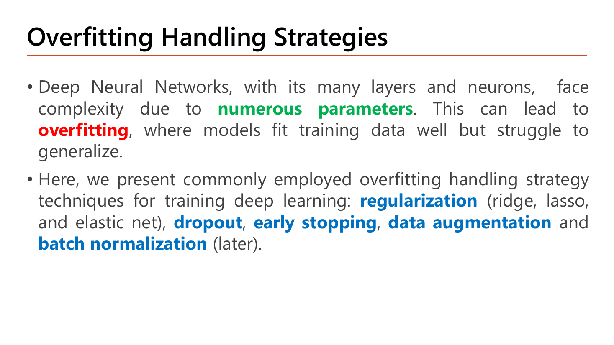
อาจารย์อธิบายต้นเหตุก่อน: deep neural network ที่มี layer และ neuron จำนวนมาก เผชิญความซับซ้อนจาก numerous parameters ซึ่งนำไปสู่ overfitting — สภาวะที่โมเดล "ฟิตข้อมูลเทรนได้ดีแต่ลำบากในการ generalize" (คือใช้กับข้อมูลใหม่ไม่ได้). จากนั้นลิสต์เครื่องมือ 5 ชิ้นที่ทำสีไว้ทุกชิ้น ซึ่งเป็นรายการที่ต้องท่องให้ครบเพราะเป็นข้อสอบแบบ "ข้อใดไม่ใช่วิธีจัดการ overfitting":
| เทคนิค | ทำงานที่ไหน | สอนที่ |
|---|---|---|
| regularization (ridge, lasso, elastic net) | เพิ่มเทอมลงโทษใน cost function | §6.1 (หน้า 27) |
| dropout | สุ่มปิด node ระหว่างเทรน | §6.2 (หน้า 28–31) |
| early stopping | หยุดเทรนก่อนจะจำข้อมูล | §6.3 (หน้า 32–33) |
| data augmentation | สร้างข้อมูลเพิ่มจากของเดิม | §7 (หน้า 34) |
| batch normalization | ปรับสถิติของ activation ระหว่างชั้น | อาจารย์เขียนว่า "(later)" ⇒ Lesson 5 |
สังเกตคำในวงเล็บ "(ridge, lasso, and elastic net)" — สามชื่อนี้คือชื่อทางสถิติของ L2, L1 และ L1+L2 ตามลำดับ ที่เราเจอมาตั้งแต่ Lesson 1. อาจารย์จงใจใช้ชื่อคู่เพื่อให้เชื่อมกับความรู้เดิม ไม่ได้เป็นเทคนิคใหม่สามอย่าง.
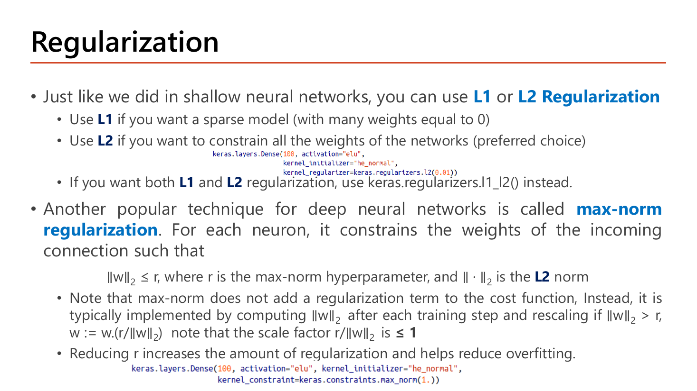
อาจารย์เปิดว่า "เหมือนที่เราทำใน shallow neural network" คุณใช้ L1 หรือ L2 Regularization ได้ แล้วให้เกณฑ์เลือกเป็นคู่เงื่อนไขที่ต้องจำแม่น:
| เลือกตัวไหน | เมื่อไร (คำของสไลด์) | ผลที่ได้ |
|---|---|---|
| L1 (lasso) | เมื่อต้องการ "sparse model" | weight หลายตัวถูกบีบให้เท่ากับ 0 พอดี เท่ากับตัดฟีเจอร์ทิ้งไปเลย |
| L2 (ridge) | เมื่อต้องการ "constrain all the weights" | ทุก weight ถูกบีบให้เล็กลงแต่ไม่ถึงศูนย์ — สไลด์วงเล็บว่า preferred choice |
| ทั้งคู่ (elastic net) | เมื่อต้องการทั้ง L1 และ L2 | ใช้ keras.regularizers.l1_l2() แทน |
เทคนิคที่สามซึ่งเป็นของใหม่สำหรับเครือข่ายลึกคือ max-norm regularization. นิยาม: สำหรับ neuron แต่ละตัว มันบังคับ weight ของเส้นขาเข้า (incoming connection) ให้ \(\|w\|_2 \le r\) โดย \(r\) คือ max-norm hyperparameter และ \(\|\cdot\|_2\) คือ L2 norm. จุดที่อาจารย์เน้นและออกสอบบ่อยคือ วิธีทำงานที่ต่างจาก L1/L2 โดยสิ้นเชิง: max-norm ไม่เพิ่มเทอม regularization เข้าไปใน cost function แต่ทำโดยคำนวณ \(\|w\|_2\) หลังทุก training step แล้ว rescale ถ้ามันเกิน \(r\):
$$w := w\cdot\frac{r}{\|w\|_2}\qquad\text{เมื่อ }\|w\|_2 > r$$และอาจารย์ตั้งข้อสังเกตกำกับไว้ว่า scale factor \(r/\|w\|_2\) มีค่า \(\le 1\) เสมอ (ในกรณีที่ต้อง rescale) — ซึ่งจริงโดยนิยาม เพราะเราจะ rescale ก็ต่อเมื่อ \(\|w\|_2 > r\) ทำให้เศษน้อยกว่าส่วน. บรรทัดปิดท้าย: ลด \(r\) ⇒ regularization แรงขึ้น ⇒ ช่วยลด overfitting (ทิศทางนี้ตรงข้ามกับ \(\lambda\) ของ L2 ที่ต้องเพิ่มเพื่อให้แรงขึ้น — เป็นจุดที่สลับกันในข้อสอบได้ง่ายมาก).
เทียบกับ \(r=1\): \(5 > 1\) ⇒ เกินขีดจำกัด ต้อง rescale
\(\|w\|_2 = 5 \le 10\) ⇒ ไม่ต้องทำอะไรเลย — max-norm ทำงานเฉพาะเมื่อเกินขีด ไม่ได้แตะ weight ทุกก้าวเหมือน L2
ทิศทางของ \(w\) ไม่เปลี่ยน (\(0.6:0.8\) = \(3:4\) เท่าเดิม) เปลี่ยนแค่ความยาวให้พอดี \(r\) — max-norm จึงเป็นการ "ตัดยอด" ไม่ใช่การ "ดึงเข้าหาศูนย์ทุกก้าว" แบบ L2. และเห็นชัดว่า \(r\) เล็กลง (เช่นจาก 10 เหลือ 1) หมายถึงกรอบแคบลง = regularize แรงขึ้น ตรงตามบรรทัดสุดท้ายของสไลด์.
สไลด์แปะโค้ด Keras ไว้สองชิ้น ชิ้นแรกคือวิธีใส่ L2 ให้ layer:
keras.layers.Dense(100, activation="elu",
kernel_initializer="he_normal",
kernel_regularizer=keras.regularizers.l2(0.01))| โค้ด | ทำอะไร |
|---|---|
keras.layers.Dense(100, ...) | สร้าง fully-connected layer ที่มี 100 neuron — "Dense" คือชื่อของ layer แบบที่ทุก node ต่อกับทุก node ของชั้นก่อน ตรงกับ Fully Connected Neural Network ในหน้า 2 |
activation="elu" | ใช้ ELU เป็น activation ของชั้นนี้ (ญาติของ ReLU ที่ให้ค่าลบเล็ก ๆ ได้ — รายละเอียดอยู่ Lesson 5) |
kernel_initializer="he_normal" | วิธีสุ่มค่าเริ่มต้นของ weight แบบ He — คนละเรื่องกับ regularization แต่มักมาคู่กับ ELU/ReLU (Lesson 5 §4) |
kernel_regularizer=keras.regularizers.l2(0.01) | บรรทัดที่เป็นพระเอก: เพิ่มเทอม \(\lambda\sum w^2\) เข้าไปใน cost โดย \(\lambda=0.01\). คำว่า kernel ใน Keras หมายถึงเมทริกซ์ weight (ไม่รวม bias ซึ่งใช้ bias_regularizer แยก) |
| เปลี่ยนเป็น L1 หรือทั้งคู่ | keras.regularizers.l1(0.01) หรือ keras.regularizers.l1_l2() ตามที่สไลด์ระบุในบรรทัดข้างบน |
ผลลัพธ์ที่คาด: layer นี้มีพารามิเตอร์ \(100\times(\text{จำนวน input}+1)\) ตัว และตอนเทรน ค่า loss ที่รายงานจะสูงกว่า loss จริงของข้อมูล เพราะรวมเทอม \(0.01\sum w^2\) เข้าไปด้วย — ข้อนี้ทำให้หลายคนสับสนเวลาเทียบ loss ระหว่างโมเดลที่มีและไม่มี regularizer. ชิ้นที่สองคือวิธีใส่ max-norm:
keras.layers.Dense(100, activation="elu", kernel_initializer="he_normal",
kernel_constraint=keras.constraints.max_norm(1.))| โค้ด | ทำอะไร |
|---|---|
kernel_constraint= | ช่องคนละช่องกับ kernel_regularizer — ตรงกับที่สไลด์บอกว่า max-norm ไม่ได้เพิ่มเทอมใน cost แต่เป็น "ข้อจำกัด" ที่ถูกบังคับใช้หลังทุก training step |
keras.constraints.max_norm(1.) | ตั้ง \(r=1\) — เขียนเป็น 1. (มีจุด) เพื่อให้เป็น float. นี่คือค่า \(r\) ตัวเดียวกับในตัวอย่างคำนวณข้างบนที่หด \((3,4)\) เหลือ \((0.6,0.8)\) |
ลด 1. เป็น 0.5 | บีบแรงขึ้น (regularize มากขึ้น) ตามบรรทัดสุดท้ายของสไลด์ — ลด r = เพิ่ม regularization |
ใช้ร่วมกับ kernel_regularizer | ทำได้ ใส่พร้อมกันในบรรทัดเดียวได้ เพราะทำงานคนละกลไก (เทอมใน cost vs การ rescale หลัง step) |
ผลลัพธ์ที่คาด: ทุก ๆ ครั้งที่ optimizer อัปเดต weight เสร็จ Keras จะคำนวณ \(\|w\|_2\) ของแต่ละ neuron แล้วหดตัวที่เกิน 1 กลับมาให้พอดี 1 — ค่าที่รายงานใน loss ไม่เปลี่ยน มีแต่ตัว weight เองที่ถูกตัดยอด.

นิยามของอาจารย์: dropout ซึ่งใช้กับ layer หนึ่ง ๆ (โดยปกติคือ hidden layer) คือการ randomly dropping out nodes บางตัวของ layer นั้น — "deactivating them by setting their activations to zero" คือปิดโดยตั้งค่า activation เป็นศูนย์ — เฉพาะตอน training เท่านั้น. ส่วน dropout rate คือ "สัดส่วนของ node ที่ถูกทำให้เป็นศูนย์ชั่วคราว" ซึ่งมักตั้งระหว่าง 0.1 ถึง 0.5.
ตัวอย่างบนสไลด์ใช้เครือข่ายที่มี hidden layer 3 ชั้น (3 node, 3 node, 2 node) แล้วกำหนด dropout rate = 0.33 สำหรับ layer 1 และ 2 และ 0.5 สำหรับ layer 3 แล้วสุ่มจริงหนึ่งรอบ ("Iteration1 – training 1 example"). ลองแปลงเป็นตัวเลข: layer 1 มี 3 node × 0.33 ⇒ ปิด 1 node เหลือทำงาน 2 node; layer 2 เหมือนกัน เหลือ 2 node; layer 3 มี 2 node × 0.5 ⇒ ปิด 1 node เหลือ 1 node — เครือข่ายที่เหลือในรอบนั้นจึงผอมลงเป็น 2-2-1 ทั้งที่โครงสร้างจริงคือ 3-3-2. และรอบถัดไปจะสุ่มใหม่ทั้งหมด ได้เครือข่ายผอม ๆ คนละรูปแบบ. นี่คือหัวใจของ dropout: แทนที่จะเทรนเครือข่ายเดียว เรากำลังเทรนเครือข่ายย่อยจำนวนมหาศาลที่แบ่งปัน weight กัน แล้วตอน test จึงใช้ทั้งหมดพร้อมกัน.
ทำไมมันกัน overfit ได้ (เหตุผลเชิงกลไก): ถ้า node A เรียนรู้ที่จะพึ่งพา node B เสมอ พอ B ถูกปิดแบบสุ่ม A ก็ใช้ไม่ได้ — โมเดลจึงถูกบังคับให้กระจายความรู้ ไม่ให้ node ไหนกลายเป็น "ตัวชี้ขาด" ที่จำ training example บางอันไว้เฉพาะตัว. ศัพท์ที่ใช้เรียกอาการที่ dropout ป้องกันคือ co-adaptation (การพึ่งพากันเองของ node).
ความน่าจะเป็น คือตัวเลขระหว่าง 0 ถึง 1 ที่บอกโอกาสเกิดเหตุการณ์: 0 = ไม่เกิดแน่นอน, 1 = เกิดแน่นอน, 0.5 = ครึ่งต่อครึ่ง. ถ้าโยนเหรียญที่ออกหัวด้วยความน่าจะเป็น 0.2 แล้วโยน 10 ครั้ง คุณคาดหวังว่าจะออกหัวราว \(10\times0.2 = 2\) ครั้ง (จะได้ 1 หรือ 3 ครั้งก็ไม่แปลก — "ค่าคาดหวัง" คือค่าเฉลี่ยระยะยาว ไม่ใช่การรับประกัน)
ใน dropout เหตุการณ์คือ "node นี้ถูกปิดไหม" และมีสองชื่อที่เป็นคู่ตรงข้ามกัน ห้ามสับสน:
Dropout(rate=0.2) คือปิด 20%)ตัวอย่าง: layer หนึ่งมี 10 node, dropout rate 0.2 ⇒ keep_prob = 0.8 ⇒ คาดว่าจะเหลือทำงาน \(10\times0.8=8\) node ต่อรอบ. ทุก node ถูกสุ่มอย่างอิสระต่อกัน ดังนั้นบางรอบอาจเหลือ 7 บางรอบเหลือ 9 — 8 คือค่าเฉลี่ย.

หน้านี้แยกพฤติกรรมของ dropout ออกเป็นสองโหมดชัดเจน ซึ่งเป็นโครงสร้างที่ข้อสอบชอบถาม:
เหตุผลที่การปรับนี้สำคัญ (ประโยคที่อาจารย์เน้นว่า "crucial"): ถ้าไม่ scale ตอนเทรน แล้วพอถึงตอน test/inference neuron ตัวหนึ่งจะ "ถูกเชื่อมกับ input neuron มากกว่าตอนเทรน" — เพราะตอนเทรนมีเพื่อนบ้านแค่ 90% ที่เปิดอยู่ แต่ตอน test เปิดครบ 100%. ผลรวมที่มันได้รับจึงใหญ่เกินกว่าที่มันเคยเรียนมา โมเดลจะทำนายเพี้ยนทั้งที่ weight ถูกต้อง. ตรวจสอบด้วยคณิตศาสตร์สั้น ๆ: ค่าคาดหวังของ activation ที่ผ่าน inverted dropout คือ \(E\!\left[\frac{a\cdot D}{\text{keep\_prob}}\right] = \frac{a\times \text{keep\_prob}}{\text{keep\_prob}} = a\) — เท่ากับค่าเดิมพอดี จึงตรงกับตอน test ที่ใช้ \(a\) เต็ม ๆ.
ข้อสังเกตเรื่องตัวเลข "เพิ่ม 10%": การหารด้วย 0.9 คือการคูณด้วย \(1/0.9 = 1.111\) ซึ่งคือเพิ่ม 11.1% ไม่ใช่ 10% เป๊ะ. อาจารย์พูดแบบปัดให้เข้าใจง่าย — ในข้อสอบถ้าให้คำนวณ ให้ใช้ "หารด้วย keep_prob" เป็นหลักเสมอ อย่าไปบวก 10% ตรง ๆ.
np.random.rand ได้ \(D_{\text{raw}}=[0.37,\ 0.95,\ 0.73,\ 0.60]\)unit ที่ 2 ถูกปิด เพราะ 0.95 ไม่น้อยกว่า 0.8. จำนวนที่ถูกปิดในรอบนี้คือ 1 จาก 4 (25%) ซึ่งใกล้เคียงแต่ไม่เท่ากับ 20% พอดี — เป็นเรื่องปกติของการสุ่ม
np.multiply() ระหว่าง activation กับ Dตรวจค่าคาดหวัง: ผลรวมเดิม \(2+5+3+1=11\); ผลรวมหลัง dropout+scale \(=2.5+0+3.75+1.25=7.5\) ซึ่งรอบนี้ต่ำไปเพราะบังเอิญปิด unit ที่ใหญ่ที่สุด แต่เฉลี่ยข้ามหลายรอบจะได้ 11 พอดี (เพราะแต่ละ unit มีโอกาสรอด 0.8 แล้วถูกขยาย 1.25)
unit ที่ 2 ได้ \(\delta=0\) จึงไม่ถูกอัปเดตในรอบนี้ — สมเหตุสมผลเพราะมันไม่ได้มีส่วนร่วมกับผลลัพธ์เลย
ไม่ทำ dropout: ใช้ \(a=[2.0,5.0,3.0,1.0]\) เต็มทุก unit ไม่มี mask ไม่มีการหาร
ตัวคูณชดเชยตาม keep_prob: 0.9 ⇒ ×1.111, 0.8 ⇒ ×1.25, 0.67 ⇒ ×1.49, 0.5 ⇒ ×2 — dropout rate ยิ่งสูง keep_prob ยิ่งต่ำ ตัวคูณยิ่งใหญ่. และกฎที่ต้องจำสองข้อ: (1) backward ต้องใช้ mask ตัวเดียวกับ forward (ไม่ใช่สุ่มใหม่) (2) backward ต้องหารด้วย keep_prob เหมือนกัน เพราะ chain rule ต้องผ่านการขยาย \(1/0.8\) ที่เราทำไว้ตอน forward.
![Slide Dropout (3) Other Issues: dropout is mainly used to reduce overfitting (high variance) and improve generalization; to determine whether dropout is too much or too little compare training and validation performance; during actual training keep dropout ON and monitor both losses; dropout introduces randomness during training so the training cost may fluctuate and is harder to use for debugging convergence; dropout can be temporarily disabled to verify the cost decreases then enabled again; with a very noisy training cost plot over 50000 iterations](../assets/slides/dl4-p30-dropout-other-issues.png)
หน้า Other Issues เป็นคำแนะนำเชิงปฏิบัติล้วน ๆ 4 ข้อที่ควรอ่านเป็นลำดับขั้นตอนการทำงานจริง:
วิธีแก้ที่อาจารย์แนะนำ (เป็นขั้นตอนที่ควรท่องได้): ถ้าคุณสงสัยว่า "โมเดลเรียนรู้จริงหรือเปล่า หรือโค้ดฉันพัง" — ให้ปิด dropout ชั่วคราวแล้วดูว่า cost ลดลงตามปกติไหม. ถ้า ปิดแล้ว training loss ก็ยังไม่ลดเลย แสดงว่าปัญหาอยู่ที่อย่างอื่น: learning rate, gradient, หรือ implementation ของคุณ. เมื่อยืนยันว่า cost ลดปกติแล้วจึงเปิด dropout กลับมาเทรนจริง. ตรรกะนี้คือ "ตัดตัวแปรรบกวนออกก่อนแล้วค่อยตรวจ" ซึ่งเป็นวิธี debug ที่ใช้ได้กับทุกเรื่อง ไม่ใช่แค่ dropout.
![Slide Dropout Implementation: Forward Propagation steps are initialize matrix D for masking using np.random.rand, convert entries of D to 0 or 1 using keep_prob as the threshold, shutdown some neurons using np.multiply of activation and D, and scale the value of neurons that have not been shut down by activation over keep prob; Backward Propagation steps are shutdown the same neurons by reapplying the same mask to delta and scale delta by the same keep_prob; with a Keras Sequential model using Flatten and three Dropout layers at rate 0.2](../assets/slides/dl4-p31-dropout-implementation.png)
อาจารย์แจกแจงขั้นตอนการเขียน dropout เองด้วย numpy ไว้ครบ ซึ่งตรงกับตัวอย่างคำนวณที่เราเพิ่งทำไปทุกขั้น:
| ขั้นตอน | ทำอะไร | ตรงกับขั้นไหนในตัวอย่างข้างบน |
|---|---|---|
| Forward Propagation | สร้างเมทริกซ์ \(D\) สำหรับ masking ด้วย np.random.rand(..) | ได้ \([0.37,0.95,0.73,0.60]\) — ค่าสุ่มสม่ำเสมอในช่วง 0 ถึง 1 |
| แปลงสมาชิกของ \(D\) เป็น 0 หรือ 1 โดยใช้ keep_prob เป็นเกณฑ์ (threshold) | ขั้นที่ 1 ⇒ \(D=[1,0,1,1]\) | |
ปิด neuron บางตัวด้วย np.multiply() ระหว่าง activation กับ \(D\) | ขั้นที่ 2 ⇒ \([2.0,0,3.0,1.0]\) | |
| Scale ค่าของ neuron ที่ยังไม่ถูกปิด: activation หารด้วย keep prob | ขั้นที่ 3 ⇒ \([2.5,0,3.75,1.25]\) | |
| Backward Propagation | ปิด neuron ตัวเดิม โดยนำ mask อันเดิมมาใช้กับ delta ซ้ำ | ขั้นที่ 4 ส่วนแรก |
| Scale delta ด้วย keep_prob ตัวเดิม | ขั้นที่ 4 ส่วนหลัง |
คำที่ต้องอ่านให้ละเอียดคือ "the same neurons" และ "the same keep_prob" ในฝั่ง backward — ย้ำสองครั้งว่าห้ามสุ่มใหม่. เหตุผล: backprop คือการหาอนุพันธ์ของสิ่งที่ forward ทำไปจริง ๆ ถ้า forward ปิด unit 2 แล้ว backward ไปปิด unit 3 แทน gradient ที่ได้จะไม่ใช่อนุพันธ์ของอะไรเลย. ส่วนโค้ด Keras ในกรอบล่างแสดงว่าเมื่อใช้ไลบรารี ทุกขั้นตอนข้างบนถูกซ่อนไว้ในบรรทัดเดียว:
model = keras.models.Sequential([
keras.layers.Flatten(input_shape=[28, 28]),
keras.layers.Dropout(rate=0.2),
keras.layers.Dense(300, activation="elu", kernel_initializer="he_normal"),
keras.layers.Dropout(rate=0.2),
keras.layers.Dense(100, activation="elu", kernel_initializer="he_normal"),
keras.layers.Dropout(rate=0.2),
keras.layers.Dense(10, activation="softmax")
])| โค้ด | ทำอะไร |
|---|---|
keras.models.Sequential([...]) | ต่อ layer เรียงกันเป็นทอด ๆ ตามลำดับในลิสต์ — ข้อมูลไหลจากบนลงล่าง |
keras.layers.Flatten(input_shape=[28, 28]) | รับภาพขนาด 28×28 (รูปแบบ MNIST) แล้วยืดเป็นเวกเตอร์ยาว \(28\times28=784\) ช่อง เพื่อป้อนเข้า Dense. ชั้นนี้ไม่มีพารามิเตอร์เลย |
keras.layers.Dropout(rate=0.2) (ตัวแรก) | ปิด input 20% แบบสุ่ม — สังเกตว่า Dropout เป็น layer ของตัวเอง ที่วางคั่น ไม่ใช่อาร์กิวเมนต์ของ Dense. rate คือสัดส่วนที่ ปิด (keep_prob = 0.8) |
Dense(300, activation="elu", kernel_initializer="he_normal") | hidden layer 300 neuron. ได้พารามิเตอร์ \(300\times(784+1)=235{,}500\) ตัว |
Dropout(rate=0.2) ตัวที่ 2 และ 3 | วางคั่นก่อน Dense ถัดไปทุกครั้ง — แปลว่า output ของ 300-neuron layer และของ 100-neuron layer ถูกปิด 20% เช่นกัน |
Dense(100, ...) | hidden layer ที่สอง 100 neuron |
Dense(10, activation="softmax") | output layer 10 คลาส (เลข 0–9) ใช้ softmax เพื่อให้ผลรวมความน่าจะเป็นเป็น 1. ไม่มี Dropout หลังชั้นนี้ — ไม่มีใครใส่ dropout ที่ output layer |
ผลลัพธ์ที่คาด: โมเดลนี้มี 4 layer ที่มีพารามิเตอร์ (Dense 3 ชั้น) รวม \(235{,}500 + 100\times301 + 10\times101 = 235{,}500+30{,}100+1{,}010 = 266{,}610\) ตัว ส่วน Flatten และ Dropout ทั้งสามชั้นมี 0 พารามิเตอร์ (ไม่มีอะไรให้เรียน มีแต่การสุ่มปิด). ตอน model.fit() ทั้งสามชั้น Dropout จะทำงาน แต่ตอน model.predict() / model.evaluate() Keras ปิดการทำงานของมันให้อัตโนมัติ ตรงกับประโยค "at test time no need to do dropout" ของหน้า 29 — คุณไม่ต้องเขียนอะไรเพิ่ม.
![Slide Early Stopping: early stopping stops training early to avoid overfitting; it monitors a model's performance every epoch on a validation set and terminates the training when the validation error reaches a minimum; you can set a large number of epochs and training will automatically stop when there are no more improvements; compared to retraining with an optimal number of epochs, early stopping does not incur much computational cost; with an error-versus-epochs graph where the training curve keeps decreasing while the validation curve turns upward at the marked Stop training point](../assets/slides/dl4-p32-early-stopping-graph.png)
นิยามหนึ่งบรรทัดของอาจารย์: early stopping stops training early เพื่อ avoid overfitting. กลไกที่ละเอียดกว่านั้นอยู่ในหัวข้อย่อยทั้งสามข้อ:
patience ที่คำนวณเต็มใน Lesson 6 §2)กราฟบนสไลด์แสดงสิ่งที่เกิดขึ้นตลอดการเทรน: เส้น Training (สีเข้ม) ลดลงเรื่อย ๆ ไม่มีวันขึ้น ขณะที่เส้น Validation (สีชมพู) ลดลงตามมาระยะหนึ่งแล้วเลี้ยวกลับขึ้น. จุดที่เส้นชมพูต่ำสุดคือจุดที่มีป้าย "Stop training" — หลังจุดนั้นโมเดลยัง "เก่งขึ้น" กับข้อมูลเทรนแต่ "แย่ลง" กับข้อมูลที่ไม่เคยเห็น นั่นคือนิยามของ overfitting ที่มองเห็นเป็นรูปธรรม.
ไล่เทียบทีละตัว: 0.60 > 0.42 > 0.35 > 0.33 แล้วเริ่มเพิ่ม ⇒ ต่ำสุดคือ 0.33 ที่ epoch 4
0.34 → 0.37 → 0.41 เพิ่มสามรอบติด ขณะที่ training loss ยังลด ⇒ ยืนยันว่า overfitting เริ่มหลัง epoch 4 ไม่ใช่ความบังเอิญของรอบเดียว
นับรอบที่ไม่ดีขึ้นติดต่อกัน: epoch 5 (ครั้งที่ 1), epoch 6 (ครั้งที่ 2) ⇒ หยุดที่ท้าย epoch 6 แต่ weight ที่ควรเก็บคือของ epoch 4
หยุดและคืน weight ของ epoch 4 (ในโค้ดจริงคือ EarlyStopping(patience=2, restore_best_weights=True) ซึ่งลงรายละเอียดใน Lesson 6 §2). จุดสำคัญ: จุดที่หยุด (epoch 6) กับ จุดที่ดีที่สุด (epoch 4) ไม่ใช่จุดเดียวกัน — ต้องมี restore_best_weights ถึงจะได้โมเดลที่ดีที่สุดจริง ๆ.
![Slide Early Stopping (2): early stopping simultaneously addresses both bias and variance by stopping the optimization process early; however this deviates from the ideal systematic improvement process which addresses various aspects of the model and data as depicted in the workflow on the right; make sure to use early stopping once all hyperparameters have been chosen; with a scatter plot of a High Bias and High Variance model and a flowchart from define problem through build architecture, collect data, train an epoch, check training and validation error, performs well on training and test data, to We're finished](../assets/slides/dl4-p33-early-stopping-workflow.png)
หน้านี้เป็นคำเตือน ไม่ใช่คำชม. อาจารย์บอกว่า early stopping แก้ both bias and variance ไปพร้อมกันด้วยการหยุดกระบวนการ optimize ก่อนเวลา — ฟังดูดีแต่นั่นแหละคือปัญหา: วิธีนี้เบี่ยงเบนจาก systematic improvement process ในอุดมคติ ซึ่งควรแก้ทีละด้านของโมเดลและข้อมูลอย่างเป็นระบบ ตามผังงานที่แปะไว้ด้านขวา. เหตุผลที่ "แก้พร้อมกัน" เป็นเรื่องไม่ดี: ถ้าคุณหยุดเทรนเร็ว คุณได้โมเดลที่ยังไม่ฟิตเต็มที่ (bias ยังสูงอยู่บ้าง) และยังไม่ทันจำข้อมูล (variance ต่ำ) — คุณไม่มีทางรู้ว่าปัญหาจริงของโมเดลคือด้านไหน เพราะคุณกลบทั้งสองด้านด้วยการกระทำเดียว.
ผังงาน "Detailed workflow for training and evaluating a deep learning model" ที่อาจารย์อ้างอิง (จาก Fundamental of Deep Learning) เดินเป็นลำดับแบบนี้: Define problem → Build neural net architecture → Collect (or add more) data → Train for an epoch → แล้วเข้าจุดตัดสินใจสองชั้น: "Is error on training data decreasing?" ถ้า Yes ให้วนกลับไปเทรนต่อ ถ้า No ให้ย้อนกลับไปแก้สถาปัตยกรรม; แล้ว "Is error on validation data decreasing?" ถ้า No ให้ย้อนไปเก็บข้อมูลเพิ่ม; จากนั้น "Performs well on training data?" → "Performs well on test data?" → "We're finished!!!". อ่านผังนี้เป็นหลักคิด: training error ไม่ลด = ปัญหาโครงสร้าง/bias ⇒ แก้ที่สถาปัตยกรรม; validation error ไม่ลดทั้งที่ training ลด = ปัญหา variance ⇒ แก้ที่ข้อมูล — สองเส้นทางนี้คือสิ่งที่ early stopping ทำให้คุณข้ามไป.
ภาพเล็กทางซ้ายที่กำกับว่า "High Bias and High Variance model" ตอกย้ำเรื่องเดียวกัน: เส้นแบ่งเขตสีเขียวในภาพทั้งบิดเบี้ยวไปตามจุดแต่ละจุด (variance สูง) และยังแบ่งผิดอยู่หลายจุด (bias สูง) พร้อมกัน — เป็นไปได้ที่โมเดลจะแย่ทั้งสองด้าน และกรณีแบบนี้การหยุดเร็วไม่ช่วยอะไรเลย. บรรทัดสุดท้ายจึงเป็นคำสั่งเชิงปฏิบัติ: "Make sure using early stopping once all model's hyperparameters have been chosen" — ใช้ early stopping หลังเลือก hyperparameter อื่นครบแล้ว ไม่ใช่ใช้มันแทนการเลือก.
np.random.rand → แปลงเป็น 0/1 ด้วย keep_prob → np.multiply → หารด้วย keep prob) และ Backward Propagation 2 ขั้น (mask เดิมกับ delta → หาร keep_prob เดิม). กับดัก MCQ: "backward สุ่ม mask ใหม่" — ผิด สไลด์ย้ำคำว่า the same ทั้งสองบรรทัด.กลับไปที่ต้นเหตุ: §6 ทั้งหัวข้อแก้ overfitting ด้วยการ "ลดความสามารถของโมเดล" (บีบ weight, ปิด node, หยุดเร็ว). หน้า 34 เสนอทางแก้อีกทิศหนึ่งที่ตรงกันข้าม — แทนที่จะลดโมเดล ให้เพิ่มข้อมูล. ซึ่งเป็นทางแก้ที่ตรงจุดกว่า เพราะอาจารย์ระบุไว้ตั้งแต่หน้า 5 แล้วว่า overfit รุนแรงขึ้นเมื่อ "ตัวอย่างไม่พอ".
![Slide Data Augmentation: a few training examples cause overfitting; one way to avoid it is to get more data (not always a feasible option); data augmentation artificially generates more training data from existing training examples with some random transformations; during training the model encounters various data facets, mitigating overfitting and improving generalization, and in image classification becomes more adaptable to object position, orientation and size variations; with one mushroom photo turned into six rotated and shifted versions, and a training-versus-validation loss plot](../assets/slides/dl4-p34-data-augmentation.png)
อาจารย์เปิดด้วยข้อเท็จจริง: "ตัวอย่างเทรนที่มีน้อยก่อให้เกิดปัญหา overfitting" ทางหนึ่งที่จะเลี่ยงคือ get more data — แต่วงเล็บสีแดงตามมาทันทีว่า (not always a feasible option) คือ "ไม่ใช่ทางเลือกที่ทำได้เสมอไป" (เก็บข้อมูลเพิ่มอาจแพง ช้า หรือเป็นไปไม่ได้เลย เช่นภาพถ่ายทางการแพทย์ของโรคหายาก). ทางออกคือ Data augmentation ซึ่งนิยามได้ว่า: การ generate training data เพิ่มขึ้นมาแบบสังเคราะห์ (artificially) จาก existing training examples ด้วย random transformations บางอย่าง.
ภาพตัวอย่างบนสไลด์คือเห็ดสีขาวดอกเดียว ที่ถูกแปลงออกมาเป็น 6 ภาพ — แต่ละภาพเอียงคนละมุม เลื่อนตำแหน่งคนละจุด และครอปกรอบไม่เท่ากัน แต่ยังเป็นเห็ดดอกเดิมและยังติดป้ายว่า "เห็ด" เหมือนเดิม. จากข้อมูล 1 ชิ้นกลายเป็น 6 ชิ้นโดยไม่ต้องออกไปถ่ายรูปเพิ่ม. อาจารย์อธิบายผลที่ได้ไว้สองระดับ: ระดับทั่วไป — ระหว่างเทรน โมเดลได้เจอแง่มุมที่หลากหลายของข้อมูล จึงบรรเทา overfitting และ generalize ได้ดีขึ้น; ระดับเฉพาะงานภาพ — ในการจำแนกภาพ โมเดลจะปรับตัวเข้ากับความแปรผันของ ตำแหน่ง (position), ทิศทาง (orientation) และขนาด (size) ของวัตถุได้ดีขึ้น. สามคำนี้ไม่ได้มาลอย ๆ — มันตรงกับการแปลงสามชนิดที่ใช้บ่อยที่สุดพอดี: เลื่อน (shift), หมุน (rotate), ย่อ-ขยาย (scale/zoom).
กราฟเล็กทางขวาของสไลด์ (Training and validation loss) แสดงสถานการณ์ที่ data augmentation มีไว้แก้: จุดสีน้ำเงิน (training loss) ไล่ลงจาก ~0.7 ไปจนต่ำกว่า 0.2 ที่ epoch 20 ขณะที่เส้น validation loss กลับไต่ขึ้นจาก ~0.55 ไปแตะ ~0.72 ในช่วงเดียวกัน — ช่องว่างที่ถ่างออกเรื่อย ๆ ระหว่างสองเส้นคือรูปร่างมาตรฐานของ overfitting และเป็นภาพเดียวกับที่ early stopping ใช้หาจุดหยุดในหน้า 32.
1,000 ภาพ — ไม่เพิ่มขึ้นเลย (augmentation ทำสด ๆ ตอนโหลดเข้าเทรน ไม่ได้เซฟไฟล์ใหม่)
และส่วนใหญ่ไม่ซ้ำกัน เพราะมุมหมุนสุ่มใหม่ทุกครั้ง (มุมเป็นค่าต่อเนื่องในช่วง −15° ถึง +15°)
โมเดลจะเห็นภาพเดิมซ้ำ 30 รอบพอดี ⇒ จำ pixel ได้ง่ายกว่ามาก นั่นคือเส้นทางสู่ overfit
ประเด็นไม่ได้อยู่ที่ตัวเลข 30,000 แต่อยู่ที่ "ไม่ซ้ำ": การเห็นภาพเดิม 30 ครั้งสอนให้โมเดลจำ ส่วนการเห็นภาพเดิมที่แปลงต่างกัน 30 แบบสอนให้โมเดลรู้ว่าอะไรคือสิ่งที่ไม่เปลี่ยน (ตัวเห็ด) และอะไรคือสิ่งที่เปลี่ยนได้ (มุม ตำแหน่ง ขนาด) ซึ่งตรงกับคำว่า position, orientation, size ที่อาจารย์เขียนไว้.
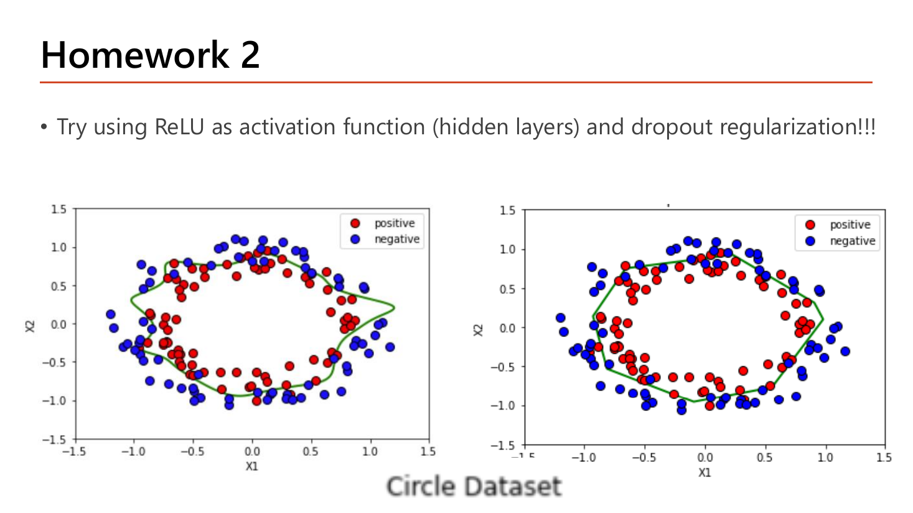
สไลด์สุดท้ายคือการบ้าน: "Try using ReLU as activation function (hidden layers) and dropout regularization!!!" บน Circle Dataset — ข้อมูลสองมิติที่จุดสีแดง (positive) กับสีน้ำเงิน (negative) วางตัวเป็นวงแหวนสองวงซ้อนกันในช่วง \(x_1, x_2 \in [-1.5, 1.5]\) ซึ่งแยกด้วยเส้นตรงไม่ได้แน่นอน จึงต้องใช้เครือข่ายที่มี hidden layer. ภาพสองภาพแสดงเส้นแบ่งเขต (สีเขียว) สองแบบ: ภาพซ้ายเส้นหยักเป็นเหลี่ยมมุมเยอะ ไล่ตามจุดแต่ละจุดอย่างละเอียด ส่วนภาพขวาเส้นเรียบกว่า เป็นวงรีกว้าง ๆ ที่ยอมให้มีจุดหลุดออกนอกกรอบบ้าง.
อ่านสองภาพนี้ให้เป็น (นี่คือสิ่งที่การบ้านต้องการให้คุณเห็น): เส้นที่หยักมากกว่าคือโมเดลที่ฟิต training set ได้แน่นกว่า — ซึ่งอาจให้ accuracy บน training สูงกว่า แต่ความหยักนั้นคือการตอบสนองต่อจุดเดี่ยว ๆ ที่อาจเป็น noise (สังเกตว่ามีจุดน้ำเงินหลุดเข้ามาอยู่ในวงแดงอยู่จริงในข้อมูล). เส้นที่เรียบกว่าคือผลของ regularization ที่ทำงาน: ยอมผิดบนข้อมูลเทรนไม่กี่จุดเพื่อให้ได้รูปร่างที่ใกล้ความจริงของปัญหา (วงกลม) มากกว่า — และ dropout คือหนึ่งในวิธีที่ผลิตเส้นแบบหลัง. นี่คือภาพ bias–variance trade-off ที่จับต้องได้.
แนวทางทำการบ้าน (ประกอบจากสิ่งที่สอนในบทนี้ทั้งหมด): ใช้โครงข่ายแบบเดียวกับที่อาจารย์ทดลองในหน้า 24 คือ \([2,10,10,10,1]\), เปลี่ยน activation ของ hidden layer เป็น "relu", ใส่ keras.layers.Dropout(rate=...) คั่นระหว่าง Dense ตามรูปแบบโค้ดหน้า 31, เลือก dropout rate ในช่วงที่หน้า 28 แนะนำ (0.1–0.5) โดยเริ่มที่ค่าต่ำ ๆ ก่อนเพราะเครือข่ายนี้เล็ก, output layer ใช้ 1 node กับ "sigmoid" เพราะเป็น binary classification, และใช้ Adam ตามผลการทดลองหน้า 24. จากนั้นเทียบ accuracy ของ training กับ validation ตามคำแนะนำหน้า 30 เพื่อตัดสินว่า dropout ที่ใส่ไปมากหรือน้อยเกินไป. เสริม (นอกสไลด์): กับข้อมูลสองมิติที่มีเพียงไม่กี่ร้อยจุดและเครือข่ายเล็กขนาดนี้ dropout ที่แรงเกินไป (เช่น 0.5 ทุกชั้น) มักทำให้ underfit เห็นได้ชัด เพราะปิดไป 5 จาก 10 node ต่อชั้นเหลือกำลังไม่พอวาดวงกลม — ถ้าเจออาการนั้นให้ลดลงมาที่ 0.1–0.2.
| หน้า | เนื้อหา | สถานะ |
|---|---|---|
| 1 | ปก Part 2-Deep Neural Network: Deep Learning (ชื่อวิชา ภาคเรียน เวลาเรียน) | etc — สไลด์ปก ไม่มีเนื้อหาวิชาการ |
| 2 | Deep Neural Network — นิยาม "many hidden layers" + โครงข่าย fully connected | ✓ หัวข้อ 1 (มีรูป) |
| 3 | How Deep Neural Network Works — Model Representation, computation layer 1/L, cost function ทั้งสองแบบ | ✓ หัวข้อ 1.1 (มีรูป + นับพารามิเตอร์) |
| 4 | How Deep Neural Network Works (2) — backprop ทั่วไป + Interpretation | ✓ หัวข้อ 1.2 (มีรูป + คำนวณ δ ย้อน 3 ชั้น) |
| 5 | Challenging in Training Deep Neural Networks — 4 ปัญหาหลัก | ✓ หัวข้อ 2 (มีรูป) |
| 6 | Faster Optimizers — เหตุผล + รายชื่อ optimizer ทั้ง 5 ตัว | ✓ หัวข้อ 2 (มีรูป + ตารางสรุป) |
| 7 | Batch Gradient Descent — Pros / Cons1 / ที่มาของชื่อ "batch" | ✓ หัวข้อ 3.1 (มีรูป + คำนวณ 100 ล้านแถว) |
| 8 | Batch Gradient Descent (2) — Cons2: local minima problems | ✓ หัวข้อ 3.2 (มีรูป) |
| 9–10 | Stochastic Gradient Descent (1)(2) — Pros 1/2, Cons 1/2 | ✓ หัวข้อ 3.3 (มีรูปทั้งสองหน้า) |
| 11 | Mini-Batch Gradient Descent — 10,000/10, shuffling, epoch vs iteration | ✓ หัวข้อ 3.4 (มีรูป + ตาราง iteration/epoch) |
| 12 | Choosing an Appropriate Batch Size — เกณฑ์เล็ก/ใหญ่, 32–256, กำลังของ 2 | ✓ หัวข้อ 3.5 (มีรูป + ตารางเงื่อนไข) |
| 13 | Cost in Training Mini-Batch GD — แบบฝึกหัดวาดกราฟ (แกนเปล่า) | ✓ หัวข้อ 3.6 (มีรูป + เฉลยเต็ม) |
| 14 | Gradient Descent with Momentum — EWA ของ gradient, top-down loss surface | ✓ หัวข้อ 4 (มีรูป) |
| 15 | Exponential Weighted Moving Averages — สูตรและการกางสูตร | ✓ หัวข้อ 4.1 (มีรูป + คำนวณสองชุด) |
| 16 | Implementation — pseudocode Momentum, Note เรื่อง :=, โค้ด Keras SGD | ✓ หัวข้อ 4.2 (มีรูป + โค้ดอธิบายบรรทัดต่อบรรทัด) |
| 17 | More on Momentum — หนี local minima ด้วยแรงส่ง | ✓ หัวข้อ 4.3 (มีรูป) |
| 18–19 | More on Momentum (2)(3) — เลือก η, learning rate decay + โค้ด ExponentialDecay | ✓ หัวข้อ 4.4 (มีรูปทั้งสองหน้า + โค้ด) |
| 20 | Adaptive Learning Rate — นิยาม adaptive optimizer | ✓ หัวข้อ 5 (มีรูป) |
| 21 | RMSprob (Root Mean Square Propagation) — สูตร s, α/ρ, โค้ด Keras | ✓ หัวข้อ 5.1 (มีรูป + คำนวณ + โค้ด) |
| 22 | Adam (Adaptive Moment Estimation) — v, s, β₁, β₂, ε, โค้ด Keras | ✓ หัวข้อ 5.2 (มีรูป + ตารางค่า default + โค้ด) |
| 23 | Bias Correction — biased estimate และการหารด้วย 1−βᵗ | ✓ หัวข้อ 5.3 (มีรูป + คำนวณสองก้าวแรก) |
| 24 | Experiments — Mini-Batch GD / Momentum / Adam บน Spiral Dataset | ✓ หัวข้อ 5.4 (มีรูป + ตารางผลจริง) |
| 25 | AdamW — decoupled weight decay, Why AdamW, โค้ด Keras | ✓ หัวข้อ 5.5 (มีรูป + คำนวณ + โค้ด) |
| 26 | Overfitting Handling Strategies — 5 เทคนิค | ✓ หัวข้อ 6 (มีรูป + ตารางสรุป) |
| 27 | Regularization — L1/L2 เลือกเมื่อไร, max-norm, โค้ด Dense สองชุด | ✓ หัวข้อ 6.1 (มีรูป + คำนวณ + โค้ดสองชุด) |
| 28–29 | Dropout (1)(2) — นิยาม, dropout rate, Inverted Dropout, test time | ✓ หัวข้อ 6.2 (มีรูปทั้งสองหน้า + คำนวณ) |
| 30–31 | Dropout (3) + Implementation — Other Issues, forward/backward, โค้ด Sequential | ✓ หัวข้อ 6.2 (มีรูปทั้งสองหน้า + โค้ด) |
| 32–33 | Early Stopping (1)(2) — จุดหยุด, ข้อดี, ข้อควรระวัง, workflow | ✓ หัวข้อ 6.3 (มีรูปทั้งสองหน้า + คำนวณจุดหยุด) |
| 34 | Data Augmentation — get more data, random transformations | ✓ หัวข้อ 7 (มีรูป + คำนวณ) |
| 35 | Homework 2 — ReLU + dropout บน Circle Dataset | ✓ หัวข้อ 7A (มีรูป + แนวทางทำ) |
สงสัยตรงไหน ถามได้เลยในแชท — ผมเป็นผู้สอนของคุณ ถามซ้ำได้ ถามลึกได้ ไม่ต้องเกรงใจ.